Horsemanship Pages
- *Home
- *Sitemap
- *SEARCH THE SITE
- *Horse History
- *Horseman Tips
- *Horsemanship
- *Amazing Horse Hoof
- *Horse Anatomy Pictures
- *Rope Halters
- My Random Horse Thoughts
- *Tying A Horse
- *Bosal/Hackamores
- *Bad Horsemanship
- *Misc Horse Info
- *Trailer Loading
- *Training Videos
- *Hobbles
- *Horse Articles
- *Health and Medical Info
- Horse & Rider Fear
- Opposition Reflex
- *Answers to Questions
- *Cowboy Wisdom
- *Cookie Recipe for Horses
- *Horse Jokes
- *Cowboy Weather
- *Sites and Links
- *A Horse's Prayer*
- *Photos Rick and Horses
- *Clinics on Request*
- *Contact Rick
Think Like A Horse - Horseman Tips
Rick Gore Horsemanship

Horses love it when their owners understand them.
Horsemanship is about the horse teaching you about yourself.
Horseman Tips:

Picking Feet: Pick and clean your horse's feet in good fresh mud. This will removes rocks and manure and puts fresh mud into the frog area,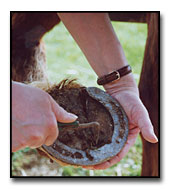 which is the best thing to be in the frog. This will help prevent thrush and other bacteria from damaging the hoof. I see many people pick the feet and then walk the horse around the barn, over rocks and manure. If your horse picks up a rock or debris then when they step in mud it keeps that bad stuff in the frog and that is not good for the hoof. If you smell a foul odor when picking the feet, it could indicate the start of thrush. Spraying a little bleach and water (50/50 mix) in the frog once a week or so will help kill bacteria and help prevent thrush. Don't forget to pick your horse's feet before you ride, before you trailer, anytime they are brought in from pasture or before turnout.
Why Horse's Spread their legs when peeing:
I get a few questions about why horses spread their legs out when peeing. It seems common sense to me, but I thought I would give my take.
No horse likes to pee on himself, the splash gets on their legs and feels like a fly or insect or bug crawling on their fur, and the scent marks them so predators can smell them easier. Horses are pretty clean and never lay in the pee or poop in the wild. However, humans want to lock up horses in a stall and force the horse to ignore this clean instinct so stalled horses will lay down and stand in their feces and urine. No horse wants to smell like horse poop or horse urine when they are being hunted by predators, so their instinct is to not pee or poop on themselves.
If a rider was more aware they know that horses always (normally) stand cross wind when peeing, so the wind will blow the pee to the side and not on the back or front legs, so when horses pee in pasture they will put their side to the wind. Most riders never let the horse do this when they ride, so the horse has to "park out" (stand really wide and spread out) in an attempt to avoid wind spray or splash.
So peeing on dirt, rubber mats, concrete will all cause a horse to park out wider and in a bigger stance.
A good horseman will read this and when stopping a horse will face them cross wind so the horse can pee without getting wet over spray.


Cocklebur plant, Xanthium strumarium
Common cocklebur is a highly branched, taproot, broadleaved annual that
grows from 8 inches to 6 feet (0.2 to 2m) high. The dull green leaves
alternate along the stem, are coarsely toothed, and often have three to five
shallow lobes. The leaf stalks are about as long as the leaves.
The flower heads of common cocklebur are unisexual. Small male and female
flowers form separate clusters. Male (staminate) flowers are in short
terminal spikes or clusters, and the burlike female (pistillate) flowers are
in axillary clusters. The distinct seed pods, or burs of cocklebur make the
weed easy to identify. Burs are light brown, Y2 to 1 inch (1 to 2.5 cm)
long, and oval or oblong. They are covered with stout, hooked prickles,
which terminate in two hooked spines. Each prickle is 1/10 to 1/4 inch (2 to
6 mm) long.
Each bur contains two brown to black achenes (seeds), one above the other.
The lower seed can germinate immediately; the upper seed is dormant and does
not germinate until months or often years later. Seeds are about 1/2 inch
(12 to 14 mm) long and 1/5 (4.5 to 5 mm) wide. Mature burs are dispersed
primarily by humans and animals.
Seeds germinate from early spring through summer, from depths of up to 6
inches (15 cm). Seeds and small seedlings are toxic to humans and livestock,
but toxicity decreases rapidly as the first true leaves develop. Regardless
of size, common cocklebur flowers from August through October in response to
day length.
Complete control of common cocklebur is often difficult because some of the
seeds remain dormant in the soil for months or even years. Early-season
control is important because cocklebur grows rapidly and, once established,
can be a long-term problem.
The most effective control measure is to prevent seed production.
Cultivation practices and herbicide applications can also be effective. No
single herbicide gives good full-season control; therefore, both
preemergence and postemergence herbicide applications are necessary.
For most effective postemergence control, cocklebur must be shorter than 8
inches (20 cm) at time of treatment, and herbicides must be applied under
good growing conditions.
REMOVAL TIPS:
Some say use Epsom salt and apple cider vinegar mix to kill them, most say
pull them out by hand and burn them.
Click Here to watch a video of me using WD40 to
remove these.
FUN FACT ABOUT COCKELBUR AND VELCRO
VELCRO WAS MODELED AFTER BURRS OF THE BURDOCK PLANT
The inventor of Velcro, more generically known as a "hook and loop fastener"
or "touch fastener" as "Velcro" is technically just a brand of that product,
was Swiss engineer, Georges de Mestral. After going out on a hunting trip
with his dog in the Swiss Alps, his pant legs and his dog's hair were
covered in burrs from the burdock plant. As an engineer, he naturally began
to wonder how exactly the seeds stuck so effectively to his pants and his
dog. He then examined the burrs under a microscope and discovered that they
had very tiny hooks which allowed the seeds to catch on to things like
fabrics, which have tiny loops.

WD40: Most everyone knows that WD40 is a good spray lubricant that will loosen most things. Well it has another really good use. For those 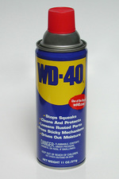of you that live in area with stickers, star thistle or other pesky things that get stuck in your horse mane or tail, WD40 works great. Spray down the tail and stickers, let it soak for a minute or so and they slide right out with ease. This prevents pulling out all the hair or cutting and is less painful for the horse. Baby oil works good too and will help make the hair shine.
** Treat your horse as one of your most prized possessions and know that time spent with your horse is never wasted.**
No Fence Corners: No corners on horse fences. Fence corners and horses are trouble. I see people spend thousands of dollars on horse fencing and then they put corners in the fence. Corners are 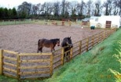 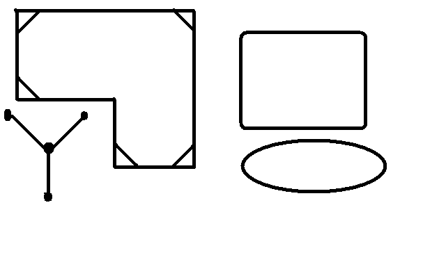 scary for horses and they get trapped when scared, chased or pushed by another horse. If you install a fence, angle or round all corners. 90% of all horse injuries in pasture occur in the corner of a fence. Get rid of corners and you help your horse stay safe. If your fences have corners, you can place 2X6s or 2X4s at an angle to remove the corners. If you have extra temporary panels, you can use them to put in the fence corners at an angle to remove the corner. Horses don't get trapped in round areas or angles. In the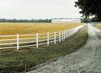 picture (above left) I have shown how to place boards or panels in corners to remove the corner. The "Y" with dots is to show a nice three wall wind block. It only takes four posts and three walls between the post and you are set. This way a horse can pick where to stand for wind, rain or sun protection without feeling trapped. You can install a roof from post to post for shade protection as well. On the topic of fences and 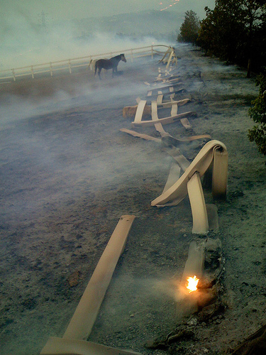gates. All gates should only open inwards towards the horses. This way if a gate is ever left unlocked the horses cannot open them by pushing on the gate. This also makes it easier to get horses since you don't have to latch the gate while putting on halters or catching your horse, you can simply close it and the horse can't push it open. The expensive nice white plastic fencing is very popular but not real functional. The picture to the left is a plastic fence after a fire. Not a pretty sight. There are good fences made of pipe that goes up easy, is strong and easy to repair, but you have research and do your homework.
**Horse's need a strong leader, not a rough and tough leader**
Sheath Noise: I have heard more crap about this topic. The noise you hear when a male horse runs or trots does NOT mean his sheath needs cleaning. That is the most absurd thing I have heard and I hear it a lot. People that know little about a horse want to give advice and just keep passing on this bunk to promote this rumor. Here are some other things I hear about this noise; the noise is made since the testicles have been removed, because the sheath is dirty, because air is trapped, it is when the horse is tense and only geldings make the noise. You will hear this noise normally when a horse is trotting but can also hear it during a canter. When a horse is tense, stressed, being resistant, showing frustration, excited or is trying to show dominance, he will make this noise. Not sure if the horse does it intentionally or by reflex (I think it is intentional). It is a squeaking, grunting or honking noise and sounds like trapped air being forced out or kept in the sheath area. Some say it happens when the horse pulls his penis up higher into his sheath, which creates an air pocket. It normally happens when a horse is tense (resistant). When a horse is relaxed you will normally not hear the noise. I think you will also hear it when a horse is showing resistance or dominance. A stallion or proud cut gelding will make the noise when entering a herd or trying to attract attention to him so he can impress the herd and announce his presence. Is he doing it intentionally or by the fact that he is tense and showing off, not sure, but I think they know when they do it. A mare will not make this noise, so I have to think it has to do with the male parts. When a horse is trying to impress mares or about to defend his position to another horse, I would say he is tense and showing dominance, which would coincide with the idea that the horse is tense and excited, which could mean he is retracting his penis and creating an air trap. The next time you hear this noise, see if the horse is being resistant, testing the owner, showing dominance, or is not wanting to do what he is doing. You will find it has nothing to do with a clean or dirty sheath. So please stop the rumor that the sheath is dirty and that is why the noise is there, it just ain't so.
Dragged by Horse: To keep from getting dragged by a horse if you fall off or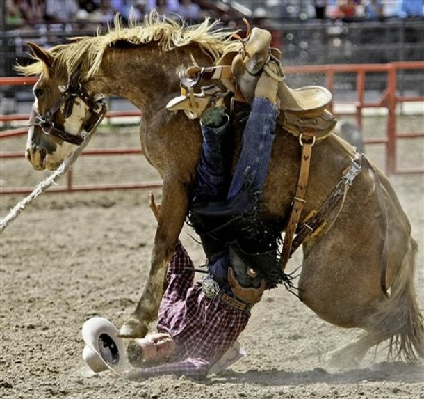 are thrown, never ride with lace up boots or shoes with no heels. Have a pair of boots only used for riding and get them a size or two bigger. That way if you are thrown or fall off and your boot gets stuck in the stirrup, your foot will slide out of your boot easily. Riding with any shoe that does not have a heel is bad. If your foot slips and your heel goes through the stirrup, you are stuck and will not come free. Always wear boots with a heel and never lace up shoes when riding. I see people wearing running shoes to ride, no heel and lace up, a bad combo. People think that I will just do it once or I am only going for a short ride. If a horse spooks or if a horse gets stung by a bee, he is going to react and may buck or rear, if your foot gets caught and you fall 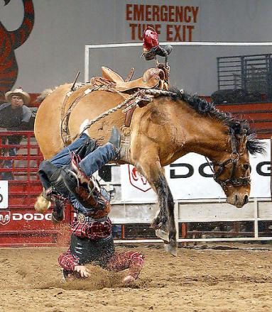off, you are in deep trouble fast and it just don't matter how short your intended ride was planned. Notice the boot still in the stirrup on the photo to the left. That cowboy may not be happy right now, but he is happier than if his foot was still in that boot.
Here is a video of foolish parents putting kids in danger and teaching a horse how to buck and throw off riders. They put 4 kids on this horse bareback and the horse gently throws them all and now knows it can, bad lesson for kids and horse:Click here to see
Bit Warming: Warming your horse's bit in the winter before putting it in his mouth. (Of course getting rid of the bit all together would be better). If warm water is available you can run some warm water over the bit to take the chill off or place the bit under your armpit while getting other things ready. This may seem little, but having metal in the mouth is bad enough, try ice cold metal. If you were a horse, what would you want? Even better if you use a bosal, then this problem is not an issue.
The Rear Cinch: To have or not to have? How tight should it be? This is some of the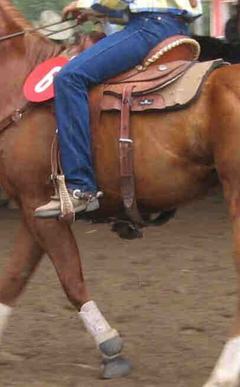 most discussed and hot topic of horsemen. Some say you don't need it, others say it is a must. Some say it should be loose, others say it should be tight. Not sure if there is a right or wrong, just pros and cons. I rode for years without one and years with one. I think you should have one. It keeps the saddle more secure, allows you to pull or dally up (drag something with a rope like another horse or log) and helps prevent the saddle from sliding or moving as much. When in a canter, it keeps the saddle from popping up and down so much and banging on the horses back. As for how tight, I like it snug. If you see a loop or space before you get in the saddle, this space and loop will get bigger once you get in the saddle, as your weight pushes down on the saddle. Any space is a place where twigs, branches or stickers can get caught and send the horse into a spook. When going up or down a hill, a horse can get his hoof caught in this slack or loop and you will have real troubles. If too loose it pops under the horse's belly as he runs and may cause a spook. I don't make it as tight as the front cinch, but snug enough to see no gap after I am in the saddle. Since it gets loose once you get on the saddle, it should be fairly snug before you mount. (In my opinion, the rear cinch in the photo is too loose since you can see a gap) Here is a link to a video of proper cinching:Proper Way to Cinch a Horse
How Tight Should the Front Cinch Be?
As for the front cinch, I get asked this all the time How tight should the cinch be?. There is not a right answer for how tight a cinch should be, it depends on many factors. It depends on the saddle (how well it fits), on the pad (how thick or thin), on who is riding (rider experience, weight, balance, skills), on the size and build of the horse, what type of saddle (English or Western), on the experience of the horse (older calmer not as tight as a new green horse), what type of riding (hills and ditches or smooth level arena), type of cinch (cotton, wool, felt, neoprene), type of latigo (leather or nylon), temperature and weather conditions outside, experience of rider and many other factors.
The tighter the cinch, the more the issues. Too tight is very uncomfortable for the horse, it can cause sore spots, rub burns, pinch the skin and make the horse irritable and bucky. Too loose and it can allow the saddle to slide off center or back. The tightness of the cinch is a fluid issue/decision. It changes as other things change. Temp can cause horses to sweat more in the cinch area and under the saddle pad. My rule is: As tight as it can without cutting the horse in half - but as loose as possible to keep me in the saddle. Since I am very aware of my balance, I adjust my saddle pretty regularly so my cinch is not very tight (many tell me I need to tighten my cinch), unless I am working cattle, doing hills, working on stops and turns, then I make it tighter. I try and think like a horse so I try and keep it as comfortable as possible. However, that means more work and more awareness on my part. It also means there is a greater chance of my saddle sliding if my horse spooks or I get lazy in the saddle. So having it a little loose keeps me on my toes, it forces me to get better, it makes me have better balance and not depend on the tight cinch to keep my saddle straight. It means I may have to dismount and tighten my cinch in some areas and then dismount and make it loose in other areas. Some people think this is too much work so they just put it as tight as they can and make the horse deal with it. That is poor horsemanship. That is taking the easy and fast way. That is being lazy so you have to think or get on and off your horse. Nevertheless, it is more common and that is what is taught by poor horsemen that don't know any better.
So when people ask me this question, like most horse questions, there is no easy fast right answer, It Depends.
Weight on Kidneys: When riding a
horse and they have to urinate, lean forward and shift your weight to the
front of the horse. This will take weight off the rear part of the saddle
and the back of the horse. Taking weight off the rear
and back of the horse will release pressure off the back and kidney area.
This will make it a little more comfortable for your horse while they take
care of business. Horsemen are always aware of the little things that make
it easier and better on the horse. Remember to stay balanced and centered on
the horse, when a horse parks out and spreads his legs to pee, they are off
balance, the last thing he needs is a rider moving around leaning, moving
and throwing off his balance. Same thought process on letting your horse
stop to poop. I see and hear people all the time yacking at their horse
about how they can poop and walk or telling someone else not to let their
horse stop and poop. Sure your horse can poop and walk or run, but why make
it? I hear that if you are at a "show" the judges will mark you down for
letting your horse stop and poop. Stupid judges! They should give you extra
credit for being a good horseman and caring about your horse. Your horse
would probably pee while running if you never let stop, but what would be
the point. A horse does not like to pee on itself and does not like to poop
on itself. So letting your horse stop, relax and take care of business is
not a bad thing, it is not a lack of control, it is not your horse being
resistant and stubborn, it is simply a horse wanting to stop and set up so
it does not poop or pee on itself. See it for what it is and not for what
some judge sees it. Good horsemen treat their horse like they would want to
be treated. If I see someone letting their horse stop and poop and see
someone yelling at their horse for trying to stop and poop, guess which one
I think is the better horseman?
Taking weight off the rear
and back of the horse will release pressure off the back and kidney area.
This will make it a little more comfortable for your horse while they take
care of business. Horsemen are always aware of the little things that make
it easier and better on the horse. Remember to stay balanced and centered on
the horse, when a horse parks out and spreads his legs to pee, they are off
balance, the last thing he needs is a rider moving around leaning, moving
and throwing off his balance. Same thought process on letting your horse
stop to poop. I see and hear people all the time yacking at their horse
about how they can poop and walk or telling someone else not to let their
horse stop and poop. Sure your horse can poop and walk or run, but why make
it? I hear that if you are at a "show" the judges will mark you down for
letting your horse stop and poop. Stupid judges! They should give you extra
credit for being a good horseman and caring about your horse. Your horse
would probably pee while running if you never let stop, but what would be
the point. A horse does not like to pee on itself and does not like to poop
on itself. So letting your horse stop, relax and take care of business is
not a bad thing, it is not a lack of control, it is not your horse being
resistant and stubborn, it is simply a horse wanting to stop and set up so
it does not poop or pee on itself. See it for what it is and not for what
some judge sees it. Good horsemen treat their horse like they would want to
be treated. If I see someone letting their horse stop and poop and see
someone yelling at their horse for trying to stop and poop, guess which one
I think is the better horseman?
Loosen the Cinch: A good friend will
help his friend feel comfortable. When dismounting, loosen the cinch and
give your horse a break. When a saddle is cinched down it constricts blood
flow, it is tight on the horse, sweat makes the skin itch and it gets more
uncomfortable the longer it is worn. If you ever wore a tight pair of shoes,
remember how good it felt to slip them off if only for a few seconds. A good
horseman will always loosen the cinch when he dismounts to give his horse a
break/breather. This will allow air and blood flow under the cinch and under
the saddle to help cool the horse and make him feel more comfortable. Your
friend will appreciate even a short break. Watch people dismount, if they
immediately loosen the cinch, you can tell they understand a horse, are
concerned about their horse and they are a good horseman.

I get asked what cinch is best. I like Mohair cinches. They are softer than rope and tend to naturally lock into the horse's hair without pulling it out. In the picture above you will notice one cinch is wider than the other. I like the wider ones. It goes back to surface area. The wider cinch will have more contact with the horse than the narrow one. More contact means less pressure on the horse. Since you have more surface area you do not need to get the cinch as tight since you have more contact to keep the saddle in place.
Imagine having just one or two mohair ropes as a cinch, you would have to cut the horse in half to get the saddle to stay put. So it goes to reason that if you have wider and increase the number of ropes contacting the horse then you will have better contact, less slippage and will NOT have put the cinch as tight.
Mounting a horse from only one side
sets your horse up for failure. If you ever have to mount or dismount from
the other side, your horse will be confused and nervous. A horse needs to
know that you can get on or off from either side. If you ever need to
dismount on a steep hill or ledge and you have never taught your horse this,
you will be in a bad fix. This is easy to teach. Start by getting off your
horse on the right side. After a few times with no issues, only get off on
the right side half way, then get back in the saddle. Soon you will be able
to mount or dismount from either side. You should always try to mount your
horse from different objects like a tailgate, a fence, the bumper of your
trailer or the top side of a ditch. This will teach the horse that it is ok
for you to mount from anywhere. Read my Horse History page to find out why mounting
only on the left got started. Remember, when mounting on a hill, always
mount from the high side of the horse. This makes you higher and prevents
you from pulling the horse down on top of you or pulling the horse down the
hill. And don't forget to sit softly in the saddle. I see too many people
just slam their butts in the saddle and I watch the poor horse's back sink,
their ears flinch and I see the pain and uncomfortableness on their face.
Ease into the saddle softly (as if you were sitting on a friend's lap) so it
will not put undue stress on the horse's back. Remember anytime you mount or
dismount, be ready for a blow up and only have your toe in the stirrup, once
you are in the saddle you can move your foot to the proper position. See a
video of how to mount a horse on both sides: Click Here See a video on
how to stop a horse from walking off when you mount: Click Here
Click Here to read about Mounting Blocks.
Is there a perfect saddle fit? What is it? How do you know? I happen to think a good wool pad is more important than a perfect saddle fit. For years, all saddles were made about the same and people rode one saddle on many different horses. Is it a perfect system? It may not be, but is it bad or damaging to the horse, probably not. I see many people very worried and willing to go to great lengths to ensure good saddle fit yet they are overweight, ride like crap, have no balance, no rhythm, no seat, no leg strength, but by gosh that saddle fits good.
I have one saddle and it has been on no less than 50 horses and it fits fine on most horses in my book. Some horses are smaller and some are bigger. Now with that said if I was riding a large Clydesdale draft horse, then my saddle may not fit.
Another dumb thing I see people doing is putting a saddle on a horse with NO pad to see if it fits. Really, is that the way you see if a saddle fits? If you have a good 3/4 or 1-inch wool pad with a curved back between the saddle and horse, the shape or fit of a saddle is nowhere near what a saddle fits like when sitting directly on the horses back with no pad.
NEWS FLASH: Saddles are not designed to be on a horse WITHOUT a pad. Now of course you have all these new gimmicks (fancy new pads) in gel, foam, neoprene, magic cushion, space age pads or whatever. Everyone trying to make a buck on the constant NEW dumb horse people and sell them something new and improved.
Some will say you need to measure your horse to get a proper fit, but what if the horse is slim or has some winter fat, or gains weight, what about extra hair in winter, what if the horse back starts to sag, or the horse develops muscle, what about if you change your pad or get a different pad, as you can see there are lots of variables that are not always constant. Proper saddle fit isn't an exact science.
To me a proper saddle fit is a good quality and well-built saddle designed for the type of horses you ride. A good saddle should clear a horse's withers (no contact when you are in the saddle) and allow the shoulders to move freely and unrestricted.
Sores
Rub burns
Dry spot on contact points
Restricted horse movement
Loss of hair on contact points
Any direct saddle contact with the horse (no pad or cushion)
Here are a couple of links to confuse you more:
Saddle fit Guide
This site has a lot of saddle fitting sites listed: Saddle Fitting Sites
So now you know what I think about perfect saddle fit, hope that helps.
Horse Trailer: When buying a trailer, think of the horse. If you ever watch a horse standing inside a stock trailer, they will be standing at a slant and not straight with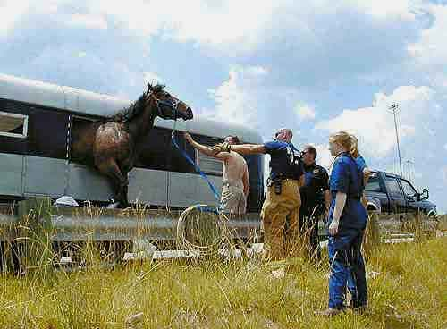 their head in the front and butt in the rear. Standing at a slant is more comfortable for the horse. It enables them to balance better and control weight shift during turns, acceleration and stops. If involved in an accident or sudden stop, a slant stance will transfer weight along the side of the body/trailer divider and not just the head and neck, like if the horse is standing in a straight load. So if the horse chooses to stand at a slant when given a choice, why would a person buying a trailer buy a straight load? I think the horse prefers a slant load trailer, therefore, I prefer them. The picture above is what happens when a horse is forced in a trailer and locked in and then panics.
Gates: I see lots of people being careful while going through gates. They take their time to be extra careful not to bump their horse with the gate. That teaches a horse that the gate is never going to touch him. Let the gate bump him, close it on his butt, use the gate to ease him through the gate and let it hit, bump or rub his legs, hips, shoulders and other body parts. Let him know that when a gate hits or bumps him, it is no big deal and he can ignore it and will not be hurt. Once a horse gets comfortable with the gate he will start pushing it open or close it for you. By trying to protect the horse too much, we teach the horse that things will never scare him. A horse needs to get scared so he knows that he does not have to be scared.
Another thing about gates is they tend to be gathering places for people and horses. This is bad and dangerous for both. People tend to want to pet and say goodbye or hello to their horse all at the gate. This teaches bad lessons and causes problems down the road. First of all gates are normal gathering places since horses learn that they get out there and get fed there, they get treats there, they get attention there, so the draw to the gate is already too strong. Now you people that want to put gates in corners and increase the danger ten fold. Then you get people who want to put water buckets near or next to the gate, now you increase the danger 20 fold.
Gates should be for walking in and walking out, period. Don't feed at gates, don't put water or food at gates, don't stand, pet and encourage horses to gather at gates. This only encourages horses to gather and increases the chance of a horse getting kicked or people getting run over and or both.
Blindfolds: Few people practice for a crisis. My horses allow me to cover their eyes with a rag, t-shirt, sweatshirt, or scarf. Then I lead them around while blindfolded.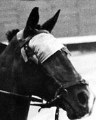This is an advanced sack out technique. It builds trust and lets the horse know that when he can't see, he can trust me to move him and walk him safely. If you ever are caught in a forest fire, barn fire or pasture fire, this will be very valuable for you and your horse. Having the ability to take away your horse's sight and still having him responsive to you, temporarily, is good for you and the horse. It may help you save your horse. Also remember that if your barn is ever on fire, don't let your horse go right outside the barn. The horse will be nervous and scared and may panic and run back to his stall for comfort and safety, not thinking about the fire.
Crawling under your horse:The more you do with your horse the more your horse will do for you. The more you trust your horse - - the more your horse will trust you.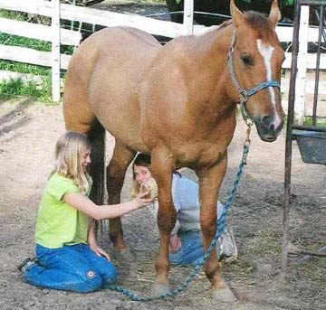 If you understand and trust your horse, you should be able to lay on your horse's back, slide off his butt, stand behind him comfortably, crawl under him, sit under him while grooming his belly and back legs and lay down beside him and rub him with your feet as you lay on your back. All of this builds trust. It teaches the horse to relax with you knowing you will not hurt him. It teaches you to read your horse, to trust him and to know how far you can go, when to release and when to go slower. I look at this as a calming exercise. Crawling around under my horse tells my horse to trust me no matter what I am doing and it teaches me to trust him. It is a little scary, I get a little nervous sometimes, but I always trust my horse more afterward I am done. Just like the horse, sometimes we have to get scared to know that we do not have to be scared. Going slow at first, coming from under a horse from one side puts you in a blind spot under the horse so if you come out too fast, it may startle the horse. This is also good to teach the horse that it is OK for you to be on the ground. Too often, the only time a horse sees you in the ground is when you are yelling, screaming as you hit the ground, and then the horse runs off from fear. This exercise will help the horse know, if you should end up on the ground, it is not a bad thing. Click here to see a video on how to walk under your horse:
Fire Drill: Another crisis drill is loading your horse in a hurry. In a fire, you may need to run to a trailer and load your horse fast. If you have never done this your horse will get scared, panic and fight you. This will frustrate you and will transfer to the horse and put you both in a panic. Try to run your horse to your trailer and load him fast. It may take a few times, but once he learns he gets out fast once he goes in, he will not resist so much. Trying this in a fire is not good planning. So after you load him a few times at a walk, try it at a trot a few times and then try it at a run. See if you can make him run into the trailer from different distances and at different approaches. Every time you push your horse and yourself, you both grow.
Bath Time: I see lots of people get into real trouble in this area. Horses know how to get wet, they stand in the rain all the time. However, getting sprayed with pressure from a hose is different. A horse should be sacked out with water like any other thing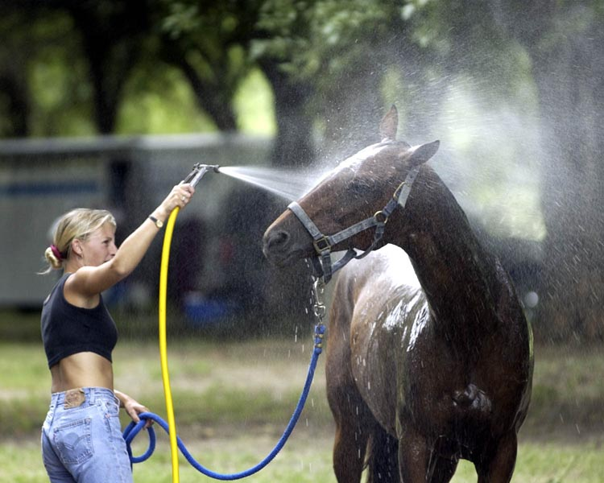 that is new and scares them. When giving a horse a bath, always spray the feet first. By wetting the legs and feet, you let the horse know what is coming and prepare them for what is coming. This will also help prevent a horse from kicking when water drips on his dry leg, which he may mistake for a fly or bee. So start with the feet and legs, then work up to the lower body, then the top and then the neck and head. I see lots of people say my horse doesn't like his head wet, so they never wash their head. Your horse will accept his head being sprayed if you do it and don't avoid it. Don't stop spaying a horse if he dances, moves or tries to get you to stop. Only stop washing him when he stands still and shows no resistance. The trick is to stop so fast at first that the horse does not have time to move. That way you work from the right answer. Too many people try and do it too long and then the horse moves and then they stop, teaching the wrong answer. Stop more and faster is the key, so the horses learn you will stop and there is NO reason to move or get scared. Like in all horse training, you stop pressure when you get the right response, not when you get resistance. See a video on Click Here: on how to wash your horse's sheath:
Hard to catch horses are smart horses. They have learned that when they see a halter, they are about to be caught and put to work. Using a catch rope will do many things. It will make you learn to lead your horse without a halter, it is easy to conceal or just throw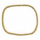 over your shoulder and it is easy to carry with you while doing your chores. A catch rope can be thin or thick, a broken lead rope with the snap removed, or a piece of hay string. I tie mine, by tying the two ends together I make into one loop. This means I have to put it over the nose and head. It may be easier to start out with just a rope that is not tied. That way you can pet your horse on the shoulder and slide the rope around his neck without messing with the head. See a video Click Here: on how to lead your horse with a loop: Teach your horse this catch in a stall or round pen first. This leading technique will force you to use better horsemanship skills to lead your horse. You will not have the advantage of a rope near the nose where you can pull or yank the horse around. Without this advantage, you will have to think more and convince, urge and encourage the horse to follow you. Later, as you get better you will not need the rope to lead your horse. The idea is to only use pressure on the rope when you need it. It is a safety catch if the horse stalls or stops following you. It should not just replace the lead rope and halter as another pulling advantage. Catching, like most things with a horse, is about pressure and release. If your horse follows you it gets release since you walk away while it follows. If the horse does not follow, then it has not been taught pressure and release so it does not understand that if it does not follow you, you will put pressure on it and make it move faster and work harder. Then the horse learns, not following is hard, following is easy.
Making a Quick Catch:
Here is handy way to make a quick catch with any rope with a loop or where you can tie a loop: The images go down in order (1,2 and 3)
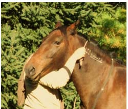
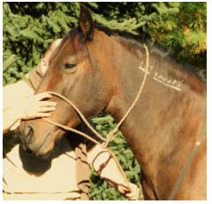
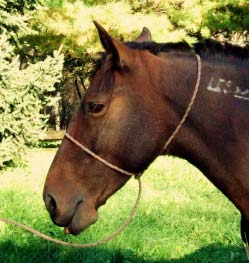
Slapping a horse: Horses don't like to be slapped or patted. They like rubs and scratches not pats. Think like a horse, when horses say hello or are relaxed, they present their head slowly, smell, nuzzle or scratch each other. They don't talk, they don't say good boy or discuss things, it is all done with body language. Give your horse a soft rub or scratch to help him relax and feel comfortable. Patting or pounding is not pleasurable to your horse. It is predatory behavior that we do to our dogs, which are also predators. It is hard and high pressure, which makes a horse uncomfortable and not want to be with you. Can you imagine if you were sitting in a comfortable spot, relaxing and calm and someone came up to you and started patting you on your neck or face. You would not like it and would feel uncomfortable and you would not want that person coming around when you were relaxing. Same thing would be if I offered you a lick off my ice cream cone or I said here take this and shoved it in your face and mouth. One way would be your choice the other would be me forcing it in your face.
Show Respect when Approaching Horses: People who understand horses have a soft way to approach a horse. I see lots of people walk up to a horse and go right for the face, reaching, grabbing and very predatory. In horse talk that is rude. Horses don't just walk straight into the face of another horse in the herd. They make eye contact; they lower their head and slowly walk in almost requesting permission. Then they stop and both horses reach out to each other and smell or acknowledge each other, then they move in next to each other and rub. So when people approach a horse, if the horse pulls away, back up or bites or nips, it is because the person was rude. Watch people and you will know who understands a horse and who does not. The horse will tell you if you approached him politely or rudely. Of course, people that don't understand will blame the horse and slap them for head pushing or nipping, saying the horse is rude, mean or disrespectful. As I say a lot, the way people interact and describe horses, is really a description of themselves, since most horses are a reflection of how they are treated.
One Rein Riding: Most good trainers
will start horses with one rein. This helps the horse understand how a rein
helps the horse turn and bend in one direction. This way the horse can only
get one cue from the rein and is less confusing and easier for the horse to
understand. Since a horse is mostly led around in a lead rope and halter, it
is used to one rein, one rope, and one direction at a time. You can use this
to get a horse to relax when you are on him for the first few times.
However, this is a good drill to continue as you grow with your horse. I
always say if you cannot ride a horse with a halter and single rein, then
you should not be riding him with a bit. Doing this drill helps remind you
to be aware of your cues. : Click Here: See a video on Riding with one
rein Since you only have one rein, you have to
be much more aware of your seat, legs, where you are looking and body
position. You cannot cheat, like you can with two reins and a bit, you must
pay attention. You have to anticipate what your horse is going to do and be
ready to give him guidance and assistance so he knows what you want. This
will teach you how to talk to your horse softly and without pain and without
making him do something verses showing him and requesting he do something. I
always want to tell someone I see being rough on a horse with a bit, to try
that with one rein and a halter and see if you can get away with it. The
horse would teach you a quick lesson that you would not like. Ride your
horse from time to time with just one rein, you will learn something about
yourself and your horse. This will also teach you to use each hand
independently. Riding with each hand working alone is better for the horse
and sends more simple cues so the horse understands with less confusion. By
only having one rein you cannot pull on two reins, which confuse the horse
and braces the horse so he can learn to pull and brace against you pulling
on two reins. This will give you confidence that you do not need a bit or
pain to control a horse. You can really tell if your horse is neck reined
trained when using only one rein. If he is, you will be able to make him
turn both ways with just one rein, if you can't then he is NOT neck reined
trained, so STOP pulling him around with two reins and thinking he is neck
reined. Click Here: to see a video on Neck
Reining
Or Click Here: to see a second video on
Direct or Indirect Reining
Here is video Where I explain ONE REIN Riding: Click Here for Explanation of One Rein Riding
Kissing or Clicking too Much: Constant clicking and kissing for everything makes a horse ignore those cues. Horse's don't talk with their mouth for any reason. Even the Mares :) -- So if you talk or give a cue make it mean something. There are certain words that horses should only hear if you want a specific response. Some of these are stand, whoa, walk, trot, canter, quit and come. If you were to say these all the time and not associate them with a specific act, they would soon ignore these. Clicking and kissing at a horse all the time does the same thing. Try to make your words and sounds mean something together so as your horse advances you will not need both and will only need one. Horse's learn from consistency. Constant clicking or talking is like sacking out (desensitizing) a horse to your voice, you don't want this. Words and sounds have to mean a specific thing to a horse. If I kiss to move, kiss to have my horse jump, kiss to have my horse come, kiss to have my horse give me his foot, and so on, the horse soon learns to ignore a kiss. Now you have loss a verbal cue that could help your horse understand. I see so-called & "know it all " horse people who use words for everything. They do things like say Step, when a horse walks over something or they Move when a horse moves or they Ear when a horse moves his ear, or they Left when a horse's left hoof hits the ground or they say Gate when a horse goes in a gate, or trailer when a horse is by a trailer, almost as if they really think the horse knows what they are saying. Horses just ignore your words if you never stop talking. One word, one sound means one thing. Remember the KISS method (Keep It Simple Stupid). This is just another example on why talking to a horse all the time makes him ignore you and your voice. Horses don't talk, they communicate with & "body language& ".
Pick Feet Before a Ride: Always pick
your horses feet before you ride. This removes rocks and burs,
allows you to check for injuries, cuts or muscle soreness and tells you how
much resistance your horse as in him. Remember, moving a horse up, down,
left, right, back and forward maintains your higher position. I also like to
stretch my horse's front legs after I saddle to remove pinches or folded
skin under the cinch before mounting. This will help you notice any foot
pain or stiffness as well. Also make sure to pick your feet before
loading a horse into a trailer. A rock in the hoof can make for a
long and painful ride for a horse.
This removes rocks and burs,
allows you to check for injuries, cuts or muscle soreness and tells you how
much resistance your horse as in him. Remember, moving a horse up, down,
left, right, back and forward maintains your higher position. I also like to
stretch my horse's front legs after I saddle to remove pinches or folded
skin under the cinch before mounting. This will help you notice any foot
pain or stiffness as well. Also make sure to pick your feet before
loading a horse into a trailer. A rock in the hoof can make for a
long and painful ride for a horse.
Groom Before a Ride: Before saddling, brush your horse on top where saddle goes and under the belly where cinches go. This removes dirt and stickers that irritate the horse and may get you a buck or two, and I am not talking about money. Brushing your entire horse is better, that way you can inspect him for cuts and injuries, see any resistance he may have, help spread his oils over his coat and make your horse feel good and help bond you with him. You should also be able to tell if he has any soreness on any parts of his body. Always check the cinch, saddle pad and straps of the saddle for burrs and stickers before saddling up.
Why do you groom a horse?
I see lots of people groom their horse. I also see lots of different ways people do it. Grooming is important to horses and humans. It causes you both to learn about each other, to spend time with each other, to provide a service to each other and to get pleasure from each other. When grooming a horse many things are happening that most do not realize. Bonding, relationship building, establishing leadership, being accepted by your horse, learning to read your horse, discovering your horse's muscles and bones so you know what is normal and so you will know when something is NOT normal. When grooming you check for injuries, pain, you desensitize your horse (sacking out), remove stickers, remove loose hair, remove mud, remove dead skin, dirt, identify sensitivity, increase circulation, you spread and distribute oils and it massages the horse so the horse finds comfort and safety when being with you. Therefore, the next time you groom, try and remember all the things you are teaching and all the things you should be learning.
Cutting Hay String/bales: If you do your horses feet you have an old rasp hanging around. If you don't you can ask your fairrer for an old rasp he is going to throw away. Using the side of the rasp, sliding it back and forth over hay string will cut through it quickly. This avoids things like scissors or knives getting lost in the hay and cutting you or your horse. So use an old Rasp, it is big, easy to find and works great.
Saddle Pad Placement: When saddling a horse, always put the pad closer to head and then slide back into place over 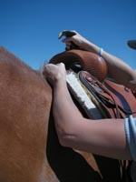the withers. This will ensure the hairs on the horse are lying flat and will be most comfortable for the horse. Don't put on the back and slide it forward as this would make the hair unnaturally. If you ever put a hat on and your hair was messed up, it feels funny and uncomfortable, that is how a horse feels if you slide the pad against the hair. Any extra pad (pad that extends past the saddle) should be forward of the saddle, since when a pad moves or slides, while riding, it will normally slide back. By putting extra pad in front, you prevent the pad from sliding back and ending up with the saddle in direct contact with the horse with no pad for padding.Wool Saddle Pads are best.
Always put your hand under saddle pad, between the horse and the pad, when saddling. As your saddle settles, the pad is pushed down onto the withers, will put pressure on the horse's back, and withers. By placing your hand under the pad, you make extra room and it pushes the pad up into the saddle gullet. This keeps the pad off the back, off the mane hair and off the withers. It is being aware and making your horse more comfortable. Click Here See a video on Saddling a Horse:
Placement of Pasture Items: When putting things in your pasture, like salt blocks, water, feed buckets, put them in different areas along the fence. This will teach your horse to walk straight lines from one place to another, which will make it easier for him to do when you are on his back.
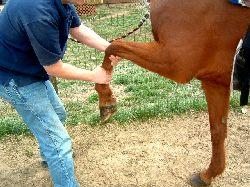Stretch your horse's front legs after you tighten the cinch and before mounting. This removes pinches, folded skin, and lets you see any resistance in your horse. It also lets him stretch out his front legs. A piece of folded skin under the cinch can put your horse into a spook during a ride. This should be smooth and easy on the horse; I see some yank the foot and do it with force and speed. This should be a calming move and help the horse relax and feel comfortable not a command. This is also a small enforcement of your position as the higher horse. Remember, moving a horse left, right, backwards, forwards and up or down (feet) tells the horse you are higher and he is lower in the herd order. See a video on this: Click Here How to teach horse to lower his head.
Stampede Stings come in handy on windy days. Also known as a hat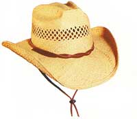 string. You can guess how it got its name. Many stampedes have started with a hat flying off into the herd and spooking a horse or cow. If windy and you are wearing a ball cap, you can wear it backwards so the wind will not catch the brim or you can take it off and tie it to your saddle with one of your saddle strings. I have been bucked off a few times when riding other people's horse's when my hat or someone else's hat has flown off and scared the horse I was riding. This always confirmed that the horse was not sacked out correctly. A horse should not react to a hat flying off you or any other rider. But finding that nasty little fact out while on a ride is not fun.
Bucking Strap: Putting a "night latch" or "bucking strap" on your saddle comes in handy. This helps when riding at night, since horses spook and move sideways at night more than during the day. Horses see more at night then we do, so they will see things before us and we have less time to react. Since you can't see as well as your horse, and can't see the ground, your balance is not as good as during the day. If your horse does buck for some reason, jump quickly, or spook, you have a much better chance of staying in the saddle and keeping your balance if you have this strap. A night latch is a piece of leather, much like a dog collar, which is secured to your gullet, next to your saddle horn and can be used as a handle when the ride gets rough. You can watch my video where I explain and show this by clicking here to view What is a Nightlatch or Bucking strap by Rick Gore.
The picture above are examples of night latch or buck strap. The rope one is called a cowboy night latch and can be made with a lead rope. Soft rope makes a nice handle. I can't say how many times this has saved me. Had I known this years ago, I would have a lot less falls under my belt. This helps the horse from learning bad lessons (it a horse gets you out of a saddle), by you staying in the saddle, the horse does not learn he can get rid of you when he wants. This has another very important benefit. If one hand is in the nightlatch then you can't be pulling on both reins (BAD) when the ride gets rough. Anytime a horse spooks, bucks or runs off, one rein is used to get control or to regain control NEVER TWO reins. An easy way to always remember this is "One rein you live, Two reins you die". Since you are only using one rein anyway, you have a free hand and if that hand is in a nightlatch, you and your horse have a much better chance of success. Some say that the nightlatch was invented by old cowboys who rode many hours and would tap naps or go to sleep while the horse walked home, since horses always know the way home.
Leading Your Horse: Leading a horse
is not pulling it around by the lead rope. You should lead your horses on a
slack rope. The harder you pull the harder you will have to pull. Light
touches and requests will teach your horse to follow you and
respond to you rather than to feel he is always in a tug of war with you.
Soft hands make soft horses, hard hands make hard horses. A lead rope should
be used as a suggestion cue and not as a pull rope. Notice others holding
their horses, many people feel the need to hang on the area where the lead
rope attaches to the halter. This is annoying to a horse and will cause him
to ignore pulls and changes in pressure to his halter. The less you move,
pull or hang on the halter, the more the horse will pay attention when you
use it as a cue. Don't hang, pull, tug, fiddle, swing or mess with your lead
rope or reins. These are used to give a cue not for you to annoy the horse
or occupy your idol or nervous hands. When leading your horse try and lead
it with no rope. Try and put your hand under the chin and 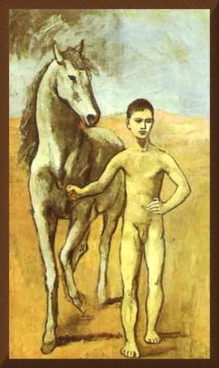on the opposite
cheek of the horse. If you lead your horse like this with a rope, soon you
will not need a rope. Another way is to place your hand on the withers while
leading your horse on a lead rope, soon your horse will learn to walk with
you if you place your hand on his withers. You should also try and lead your
horse with other things. Try and lead with your belt or shirt around his
neck, a hay string or other string. Never pull a horse straight, you can't
do it, he will learn to pull and you will lose. Always pull and release at
an angle so you take away the horse's ability to pull straight back. You can
tell someone who does not understand a horse when they continue to pull
straight on a horse until they cause the horse to rear and they say their
horse NEEDS a stud chain. Leading is about getting a horse to follow you
without pulling it. Less is more. The photo above and left is a Picasso done in 1906 of a boy leading a
horse. Picasso was known for some of his horse paintings.
teach your horse to follow you and
respond to you rather than to feel he is always in a tug of war with you.
Soft hands make soft horses, hard hands make hard horses. A lead rope should
be used as a suggestion cue and not as a pull rope. Notice others holding
their horses, many people feel the need to hang on the area where the lead
rope attaches to the halter. This is annoying to a horse and will cause him
to ignore pulls and changes in pressure to his halter. The less you move,
pull or hang on the halter, the more the horse will pay attention when you
use it as a cue. Don't hang, pull, tug, fiddle, swing or mess with your lead
rope or reins. These are used to give a cue not for you to annoy the horse
or occupy your idol or nervous hands. When leading your horse try and lead
it with no rope. Try and put your hand under the chin and 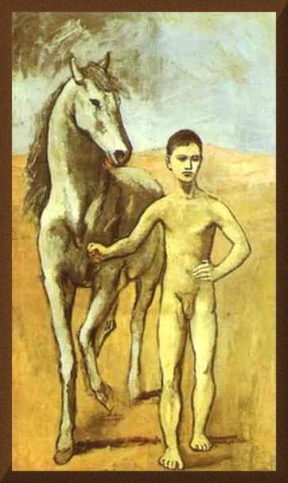on the opposite
cheek of the horse. If you lead your horse like this with a rope, soon you
will not need a rope. Another way is to place your hand on the withers while
leading your horse on a lead rope, soon your horse will learn to walk with
you if you place your hand on his withers. You should also try and lead your
horse with other things. Try and lead with your belt or shirt around his
neck, a hay string or other string. Never pull a horse straight, you can't
do it, he will learn to pull and you will lose. Always pull and release at
an angle so you take away the horse's ability to pull straight back. You can
tell someone who does not understand a horse when they continue to pull
straight on a horse until they cause the horse to rear and they say their
horse NEEDS a stud chain. Leading is about getting a horse to follow you
without pulling it. Less is more. The photo above and left is a Picasso done in 1906 of a boy leading a
horse. Picasso was known for some of his horse paintings.
Asking for help: Don't ask people how to fix a problem with your horse, just because their horse has the same problem. I see this all the time. If John's horse throws his head, don't ask John how to fix this problem. If Bob's horse bucks, don't ask Bob how to help you stop your horse from bucking. People often think that if someone has the same problems with their horse, then that person will know how to deal with all horses that have the same problem. This comes from the belief that the problem is the horse's fault. In fact, most of the time the person causes the problem. If your horse runs back to the barn, don't ask another owner that has a horse that runs back to the barn how to fix this. If their horse has the same problem, they obviously don't know how to fix it and like you, they probably caused it.
Dropped Lead Rope: Allow your horse to walk around with a lead rope dragging in a small area. They will step on it and pull back thinking they are trapped. After a few times they will learn they are causing this and it will not be a big deal. The more you do this, the more they will learn that it is not a bad thing to step on the rope and they will learn how to release the pressure over time. That way when you accidentally drop your rope and your horse steps on it, you will not get a blow up or run away. Remember to use a rope halter with no snaps so your horse will not break it and it will not hurt him. Not to mention that if the snap breaks he will not learn how to release the pressure and only learn to pull until the snap breaks.
Braided Tails: This may look pretty but it is bad for the horse. I hear all kinds of reasons for this; it helps the tail grow, it keeps the tail free of tangles and stickers, it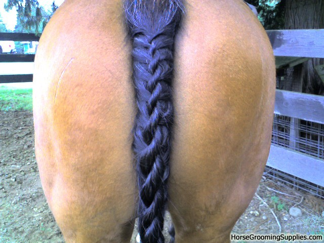 stops other horses from chewing on it, it keeps it clean, bla bla bla... A horse needs his tail free. The tail helps keeps flies off him, it allows him to buddy up with another horse to keep the flies out of each others face, it acts as a warning for danger to the herd, it acts as a warning to another horse, it is used for communication with other horses, helps cool him on a hot day and last but not least, I have never seen a wild horse with a braided tail, which makes it very unnatural. Don't do it, it is bad for the horse.
Spooks: When a horse spooks it is NOT a bad thing. It is a training opportunity. Sometimes a horse needs to get scared to know that he does not have to be scared. Spooking is a very natural act for a horse. They do it all the time in the wild except it is called being alert, staying alive and surviving. A good alert horse will not let a mountain lion get you or let anything get close to you without letting you know about it. Don't get mad at a horse for doing it. Reassure him and let him know he does not have to be scared. If you get hard on the bit, start flexing and getting forceful, then you confirm that the horse should be scared. You don't want your horse associating pain with any fear. And remember pain causes fear so rough hands, bits and spurs = fear!
Horse of a 1000 rides: Too many people want a perfect horse from riding it three times a week or every weekend or a few times a month. After about a 1000 rides you can consider your horse broke. I hear horses for sale that say "three year old, dead broke", BS. No such thing as a dead broke horse at three. In order to get a 1000 rides on a horse, if you ride a horse every day for three years you will get a 1000 rides. If you ride a horse twice a day for two years you will get 1000 rides. If you are like most people and only ride two times a week, it will take you 10 years to get a thousand rides in. The number of rides is not the only thing that is important, it is how long the rides are, what you are doing and how well you are doing it. Therefore, with all those factors, the odds of getting a well trained and well broke horse under six years old is very rare. Now, with that in mind, that is only considering the horse. What about you? How many actual rides do you have under your belt? What did you do on those rides? Were you just sitting or were you actively driving and learning? So even if you have a horse with a 1000 rides, if you only have 100 rides, it will not take long for the horse to know this. So be aware that it takes time to make a good horse and it takes time to make a good rider. The horse is the best teacher of the horse: learn from them all and be a good student of the horse.Before you blame the horse for a problem, make sure you have your 1000 rides in.
Do unto your horse have you would have your horse do unto you
Flexing: Don't over do this, but by flexing your horse left and right after you mount, it gets the horse in a routine and he will not want to walk off after you mount, knowing you are going to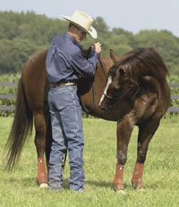 flex him. This also tells you where your horse's head is at (mentally), is he paying attention to you or how much resistance is he feeling. While trail riding, flex your horse and make him let you touch his face and rub his eyes while flexed. This will make him more comfortable about flexing and when he gets a pesky fly on his face or something in his eye, you can flex him and help rub it away. If you do it enough, the horse will learn and will flex when he wants help with flies or something else on his face.
Changing bits while Mounted: I still find it hard to believe what I see people doing with horses. It just confirms why so many injuries are blamed on horses when really people cause them. I just saw a rider, while sitting on a horse, allow another person to remove the headstall and reins and then replace the headstall with another bit and reins. For about 30 seconds, this rider was sitting on a horse with means to control it in an open area. Had this been done in a round pen or enclosed arena, it would not have been as dangerous, but still unwise. Since it was done in an open area with cars, trailers, other riders, motorcycles, planes and other distractions, it was extremely dangerous and risky. It would have been very easy for something to spook this horse (a bee sting) and cause this horse to jump, run off or move quickly. Had this happened, the horse would have quickly learned that he was free and the rider had no reins or no lead rope to control him. This would have made the horse more insecure, what could have been a small spook, and jump is now a scared horse that thinks his rider is giving him no direction and no help and now he is on his own. So what do you think would happen next, the horse would run, since his instincts would take over and he would be more scared. Then the rider would be scared, rightfully so, and she would probably scream, yell and panic, squeeze with her legs, this would increase the fear the horse was already feeling and would only cause him to run faster and with greater fear and possibly run blind. Since many riders use their reins for balance, the odds are the rider would fall off or jump off. And of course everyone would blame the "Crazy" horse for all these problems. The point is, don't ever let anyone remove your headstall, reins or other means of control, while you are on a horse, it is dangerous and foolish and only sets the horse up to get blamed when it goes bad. When you take all head control off a horse, you can expect that he may walk off, run off or start to move, no matter how well he is trained. No training takes out all fear and spooks from a horse. So a horse can spook at any time, under any conditions, so don't be shocked when it happens, expect it and plan for it, so when it happens it won't be such a surprise. This could have easily been avoided by simply getting off the horse and then getting back on. Even putting a lead rope on the horse before removing the headstall would be better, but don't risk it. Get off your horse if you need to change a headstall and make sure anyone you care about does the same.
Spurs: A lot of Spurs are for people who want to look cool. They are a reminder of the old style of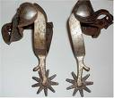 horsemen. When pain and fear were commonly used to train horses. If a horseman is good enough and understands the horse, he will need spurs on all horses. Unfortunately, most riders who wear them never get good enough to get rid of them. They more worried about looking rough and tough than caring for the horse. Not so long ago, so called horsemen would sharpen their spurs and tips to make the horse more responsive. But many people that use them would say "it does not hurt the horse if you know how to use them "or they say" I don't use them unless I have to ", or they say," If you use them right they will not hurt the horse." If you know how to understand the horse, you will normally not need them. If you allow someone to use them on your horse, soon your horse will not respond to anyone that is not wearing them. On the flip side, yes they can be used as an effective aide to give more specific cues to specific parts of the body, but not for general riding and not for 90% of riders. Until you know how to ride in balance, learn timing and feel, learn to use your body and legs to communicate with your horse, you do not need to add spurs to equation. The old Saying is & "you have to earn your spurs ", that was meant for a reason. Giving an inexperienced rider spurs only hurts them and the horse. By earning your spurs, you put in ride time, you learn how to talk and communicate with a horse without them, you learn how to get a horse to respond without them, then once you don't NEED them, is when you should strap them on. Unfortunately, the opposite is true today and people who wear them THINK they need them and have never learned how to ride effectively without them. And the horse suffers.
Control Test: To test your control of your horse, do this exercise. Walk your horse to a fence post and stop with his head facing the pole. Try and move only your horse's hips to the right, a quarter turn. Your horse's front legs should still be in line with the pole. Now face the pole again and move your horse's front legs to the right. Your horse's back legs should still be in line with the pole. This will show you that you have control over the front end and the hindquarters. He won't get it right the first time, but he will get better the more you do it.
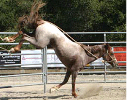Horse kicks: Horses kick for varied reasons. If you get kicked, it is normally because you failed to see the warning sign or was not paying attention. A horse can kick from fear, aggression, if he gets startled, if he is being disrespectful, maybe a fly or bee landed on his leg, he may be playing, sweat may be dripping down his leg, a leaf may get blown into his leg or when he gets excited like getting out of his cell (stall). An old cowboy saying is "if you always keep at least a quarter of an inch between you and horse's foot, you will not get kicked." Keeping that inch is the problem. Being alert and aware when around horses is the best thing you can. Watching the horse for signs or possible issues that may cause a kick. This is mainly when you are near a horse's rear feet. If I am at my horse's head, I really don't care if he kicks. If your horse trusts you, sees you as his leader and respects you, he normally will not kick at you. See a video Click Here: on How to prevent from getting kicked by a horse:
*If your horse says no, you asked the question wrong*
Hot Wires: Spend some time with your horse and hot wires so they understand them. Too many people just put up a hot wire and think a horse will figure it out, not so. If you do not introduce the horse to the wire and help him understand to move away from the shock, you will set the horse up for failure. When a horse gets his first shock from a wire, he will most likely panic and run into it, in an attempt to get away from pain. After he does this a few times, he will learn that by running through the hot wire, the pain is stopped and now you have a horse that only knows one way to deal with hot wires. Then you can be like so many others and blame the horse for not knowing what to do and being hard headed, when in fact, it was your fault for not showing the horse how to move back away from the wire. Hot wires are cheats; they use pain and fear to train a horse. I don't like them and think they are mean. I see people put them around their stalls to keep their horse "safe". This makes a horse nervous and always on guard when moving, trying to make sure he does not get shocked. A stall is bad enough, at least a horse should be able to feel safe in it. Hot wires are just another cruel method and shortcut used to control horses with fear and pain.
Ride your horse: I see all too often people go the barn, talk, feed and then come up with excuses for not riding their horse; I don't have time, it is too hot, he is not in a good mood, he looks sore, his hoof is chipped, it is too windy, too many people are around, the tractor is working and 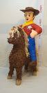it scares my horse, by the time I saddle up I will have only few minutes to ride, my horse seems lazy, my horse has a cough, and so on. A ten minute ride a day is much better than a two hour ride on one or two days. Saddle up, even if you just sit on your horse and talk or walk to get the mail. Little short rides teach the horse that not every time you saddle he gets his ass rode off. Short pleasant rides, where the horse is not worked that hard are great for you and the horse. No pressure, no fuss or frustration and spend some time in the saddle. So stop making excuses and ride your horse. For most people it takes seven years for them to get one year's ride time on their horse. Short rides teach a horse that when it gets saddled it does not mean they are going to get ridden for miles.
Allowing or Stopping: You want a horse to think you let or allowed him to do something, not that he made you release pressure. Knowing this difference is huge and you can bet the horse knows the difference. Stopping a horse from doing something is the same as making him do something. If I stop his forward movement, I have exerted dominance and told him I control his movement. If I make him give me his leg, I have stopped him from standing on all four feet and take away his ability to run. So let's take eating on the trail. If I allow a horse to eat, then when I stop him from eating, he is submitting to me, when I am asking, and he stops eating. You are always teaching a horse. If you stand around and pull or hang on a horse's lead rope then you teach him to ignore pressure from the lead rope, if you always pull or keep your reins tight, then you teach him to ignore pressure from the reins. Your ability to make a horse feel no pressure is as important as your ability to make a horse feel pressure. You being aware of it is the key. Horse riding is not a spectator sport. Awareness is the key to knowing what you are doing, what your horse is doing and how to change both.
Pre-ride Checklist: Have a routine for saddling up your horse before you ride. This lets the horse know what to expect and creates GOOD habits. I like to tie him up, pick his feet, brush him down, saddle him up, stretch his front legs, flex him on each side, tighten the cinch at least three times, lunge him once or twice each direction and make him stop, then mount and sit for a few seconds so he learns to wait and not walk off as soon as I get on. This tells me alot about my horse. I can tell if he shows any pain or sensitivity while brushing or picking his feet, I can tell any resistance when picking his feet, flexing or stretching his front legs, when lunging I can see if he is paying attention and listening to me. All of this will set you and your horse up for a safe ride. What I see most people do is rush, rush, rush, throw the saddle on, cinch up once as tight as they can, be rough with the horse by pushing him around, force the saddle and bit, and then jump on and immediately take off. This sets up bad habits and if your horse has any issues you will find out on the trail and while in the saddle, not good for you or your horse.
Fly Help: Don't throw away your old bacon grease. Save it and use it in the summer to keep flies away from cuts, scrapes or out the horse's ears. I rub a little in the ears and it keeps the flies and gnats out. Not sure why, but pork fat repels flies. Try it, it works and is cheap.
Flies Cause Heat Stroke in
Horses:
Flies control is important - Flies seek shade in the heat
of the day and do not like direct sunlight. For this reason when horses are
NOT treated or helped with fly control, the horse will stand in the sun to
help keep the flies off them - the problem then becomes a horse will roast
in the sun, dehydrate and can get heat stroke, sunburn or heat exhaustion
trying to keep flies off them. This is the same reason flies gather under
the horse's belly, they seek shade and know the horse can't use their tail
to show them off. Horses with excessive flies tend to have other health
issues, like worms, lack of proper food or minerals or some other sickness.
Spray Bottles: Save your old spray bottles. You can put corn oil in one and spray on the hay or grain. An old shampoo bottle with a pump works well too. I keep an old spray bottle with one third bleach and two thirds water for my horses feet. After I pick them out, I spray a little bleach mix into the frog area to kill bacteria and other junk. I don't do it every time, but at least once or twice a week. I pick my horses feet at least once a day.
Riding Friendly: When a rider dismounts to open or close a gate for others, it is proper to wait until that person remounts before riding off. Horses may get nervous if their buddies start leaving without them, which may cause problems for the rider trying to mount.
Plastic Bags: Bring your horses treats in a plastic bag.Carrots, apples or treats, soon the horse will not fear plastic bags, they will like them and associate them with good things.
No Reins Steering: Test your ability and see how well your horse responds without reins. On the way back to the barn, try to let go of your reins (hang them on the neck or saddle) and see if you can get your horse back to the barn without using them. If you have to use them, just pick them up lightly and then put them back down. Use your legs, seat, body and voice to see if you can get him home with no reins. Each time your horse will get better and you will learn not to rely on your reins so much. Click Here" to a see a video of Riding with One Rein:
Release: Good horsemen have "brains in your hands." You see, when you were asking a horse to move, you were putting on the pressure. When you quit the pressure, you released the pressure; the horse thinks he did the right thing. The release is what the horse 'really' learns from. Unless you are absolutely clear on what you want from him, you may teach him something you didn't mean to. If you release the pressure at the wrong point, he'll think and remember what he did last to get you to leave him alone. So, if a horse tries to lie down while you are riding him and you get off. Guess what, you just taught him how to get you off of him. If what a horse is doing, gets you to quit, then that is what the horse learns to do, to get you to quit
Keep some salt in your truck or trailer. When in strange places horse's may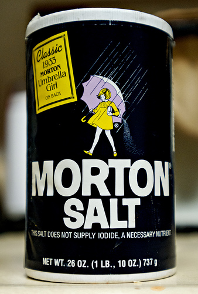 not drink the water. If you put the salt in your hand and let your horse lick it, they will usually take a drink after the salt. Once they take a drink, they will normally continue.
Vinegar: This stuff is great. It cleans, it helps with fungus and I hear if you put a little apple vinegar in the grain it helps repels flies. It is cheap and does wonders for hair, which our large friends have lots of. So put some vinegar and water in a spray bottle (maybe 50/50) spray it on the horse and feel how soft it makes the hair. Just like show-shine but a hell of a lot cheaper. Maybe not as good, but close. Vinegar and lemon juice is also said to kill weeds safely. Try it out and see if it works on your weeds.
Nylon Latigo: Some people have changed their leather Latigo in for a nylon one. 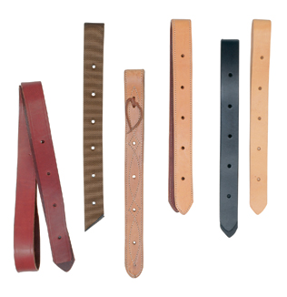Leather stretches and allows the horse to breathe and will give as the horse breathes heavier or expands his chest. A nylon Latigo will NOT give and if put on too tight will start to cut into your horse since it is much thinner and stiffer than leather. Nylon is much more uncomfortable to a horse. It is much stronger than leather, but is not as good for the horse as leather. A horseman will not use something that is not good for the horse. The photo to the left shows a nylon latigo.
Blankets -- As a general rule, most healthy, unclipped horses don't need added blanket protection in temperatures above 10 to 20 degrees Fahrenheit. Below that, a blanket helps conserve calories and keep your horse comfortable. A wet horse often shivers as a natural response in order to warm the muscles. This does not necessarily mean a horse is overly chilled, but rather it is his body's way of coping with the environment. Offering extra grass hay will help him stay warm from the inside out by utilizing the natural combustion chamber of the hind gut as it digests the high fiber ration. If you feel you must blanket, remove the blanket during the day to prevent sweating.
Hay string Dangers -- Hay string will kill a horse, it will look like colic and you will never know what killed your horse. Remove your hay string as soon as you cut it off the bale. Leaving hay strings laying around or just cutting the sting and leaving it around the bale creates problems. When feeding at night you can accidentally feed a hay string with your hay. Most horses won't eat it, but they can accidentally eat it as it is mixed up with the hay and once they swallow it, it can wrap about their gut or intestines and will kill the horse. It is very important to remove hay string as soon as it is cut to avoid a horse accidentally eating it, which will kill the horse. I immediately tie all three hay strings (since my bales of hay all have three strings) together so it makes a big knot and is harder to misplace one string. That way when I grab one I have all three. This ties into checking the hay you are feeding your horses, you need to check for glass, nuts and bolts, metal, dead rodents, dead snakes, mold or other foreign objects that a horse can accidentally eat. Watch a video on dangers of hay string
Good Colic Information Additional Colic Information
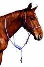This is called a Cavalry knot for a halter.mIn the days of war, horses were allowed to graze but had to be ready to be caught and lead in a moment's notice. This knot allows a horse to walk around, graze and still be safe, while wearing his halter and lead rope. It is a simple knot, much like a hangman knot. You can lead the horse with the rope left around the neck or you can slip it over the head and lead him normally. By putting your hand under the chin and sliding your hand forward, you put pressure on the lead rope and the horse will walk as if you were leading him. If you do this enough, you can put your hand under your horse's chin and he will follow you and lead for you without a rope.
Watch my video on How to Tie a Cavalry Knot by clicking here
Removing Mud: When your horse gets muddy from a nice roll, use a broom to remove it. This is a good way to sack out your horse while you clean him. The broom will be different and you will have to desensitize him to it at first. A good stiff broom removes dried mud, dirt and other debris. It covers a wide area and you get more leverage from the long handle. Another good tool is a rasp. Rub it softly in a circle over dried mud; it breaks it up without damaging the hair so the mud can be brushed away easily.
Trimming Whiskers:This may make your horse look clean and groomed, but it does take away from your horse. A horse will use his whiskers to test a hot wire to see if it is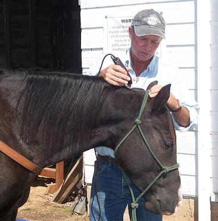 hot, he needs them so he knows when he gets to water since he can't see under his chin, when rubbing on another horse, he knows when to go slow and when he is close to danger. Long eyelashes also help a horse with flies and helps him from poking his eye out. When he gets close to an object, the long eyelashes let him know when he is too close to an object. Yet many trim all these away just for ego and so they can say their horse looks better, clear or so they can win a ribbon. Next time you see a horse with an eye or face injury, check the lashes and eye whiskers, I'll bet they were trimmed.
One-Rein Stop Warning: Many people promote and praise the "emergency brake" or "one rein stop." I have heard this preached by many, including people that call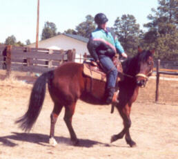 themselves trainers, life-long Horseman and so called horse experts. The one-rein stop is also called "a horse fall" move by the movie industry. Watch an old western movie and when you see a horse fall, notice the rider doing a "one-rein stop." This technique is dangerous and is not fail-safe. If applied too harshly or too quickly you will cause your horse to fall and possibly roll on top of you or break his leg. Don't depend on some move, that is preached by so many, to save your life in a crisis or run-away horse situation. Calmly tilting the horses head inward and trying to circle the horse slowly into a smaller circle until you can calm the horse and bring him back to you mentally is a much better option. Be aware of those who tell of the magic tale of the "one-rein stop." You can click here to view How to do a One Rein Stop on a horse - by Rick Gore.
Horse Shoes In Pasture: A lot of barns have a policy that if your horse has rear shoes he is not allowed to be turned out with other horses. A horse can take a kick from another horse. However, a kick from a shod horse will break bones, cut deep and will cause much more severe damage and deep cuts to another horse. Be a responsible horse owner, if you feel you must shoe your horse, only do the front feet and if you do the back feet, don't turn your horse out with other horses. If you have a choice, don't allow others to turn their horses out if the horse has rear shoes. Another note on shoes, they cause fires. Ever ride at night and watch a horse with shoes; they will spark as they hit rocks and gravel. So if a bunch of horses are in a dry pasture and start running or playing, a fire can start pretty easy. Just one more reason not to have shoes in pasture. To see the power of a horse kick watch this video, CLICK HERE.
Empty Grain Bags: Save them empty bags for hay. When going out for a trip or overnight stay, empty grain bags are great for a flake of hay. Slide the flake in the bag, fold over the end and you can stack them in your tack room. You can even put a little grain in the bad over the hay so your horse can get a little treat with his hay. This will make for easy feeding later and will keep the hay from blowing all over everything during the ride. So it keeps the hay off other things, it makes for easy feeding and the bags can be used for garbage after you feed the hay.
Placement of Water Troughs: This is an often overlooked area. Horses naturally want to show dominance at watering spots. High horses will often push lower horses away from food or water to show their strength and position. Of course, I hear people call horses mean or aggressive for doing this, but they don't understand horses. These people are the same ones that nail metal shoes to hooves and lock horses in stalls to protect them. Since water is a normal and natural point of conflict for horses, why do people insist on putting water next to gates or in the corner of fences? This causes horses to be hurt, kicked, trapped and other issues. The best place for a watering hole is in the open, next to nothing. This way horses have plenty of escape routes, will not get trapped and will be able to get to water for all directions, this also makes it harder for a horse to protect and defend so they do not do it as much or as long. Like all things with horses, the easy way gets horses hurt. It is easy to put water by the faucet, by the gate, near a wall or fence, all bad locations for keeping horses safe.
Farrier verses HorseShoer: Lots of people out there claim to be a Farrier. In the olden days, people remember a Farrier was called a Blacksmith. The word Blacksmith comes from black metals that turn black when heated (iron) and smith comes from the word smite which means to hit. Hence heating iron and pounding it to shape. Blacksmiths mainly made weapons and tools and later moved to horse shoeing. As people learned more about the horse's foot things changed. Even today the angle of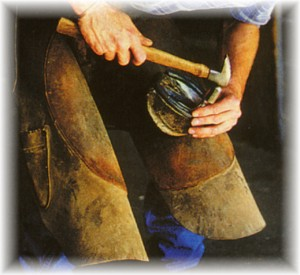 hooves are debated. Farrier school takes about a year to complete and concentrates on hooves. Angles, anatomy, neglect, fixing problems, mistakes and most topics related to hoof care are taught. So if a person calls himself a Farrier, he should have some education behind him to prove this. Some of the old timers may have been doing horses feet for 30 or 40 years, but never have had any formal education. Not a bad thing since they have many years of first hand experience. Owning a horse will require you to use someone for your horse's feet. So knowing the difference may help. One Farrier told me that the difference between a horse shoer and a Farrier is: A Farrier is who you call after a horse shoer messes up your horses feet. Made me laugh, but there may be some truth to that. Be aware how to tell if the person working on your horse's feet knows what they are doing. Always watch them work on your horse. Ask questions and learn something from each visit. Confirm things you are told from other horse owners and other Farriers. Research things on the net to get different viewpoints and to see what information is out there to help you learn. I like to watch for clues. What clues do you ask? Does this Farrier own horses, is he known, what is his reputation, does he explain things, is he gentle, does he hit horse's with his tools, does he use a gum line, does he use a twitch, is he on time, does he answer his phone, does he keep his appointments, does he tell stories about how many bad horses he has beat to make them behave, and so on. Don't be afraid to tell your shoer NOT to hit your horse. If you are there, you can enforce this no hit policy. On the other hand, if you have not spent the time to train your horse, don't be surprised if your Farrier does not return your calls and does not want you as a client. If you pick your horse's feet daily, your horse will behave much better for the Farrier. If you educate yourself about horse's feet, you will know when a Farrier is packing sand or being honest. HINT: Farrier's make more money shoeing horses than trimming horses!!!
Why I don't like horse shoes. The two photos below show how a hoof flexing helps the horse with blood flow and keeps the hoof healthy. Notice in the first picture how it shows three different ways the hoof flexes. This does not happen with shoes:


Weight Load: A good average for what weight a horse can carry is about 20% of the horse's weight. So a 1000 pound horse can safely carry about 200 pounds. This can go up or down depending on the rider's ability, saddle and gear weight, how in shape the horse is, how old the horse is and what terrain you are riding in.
Horse Growth: A horse reaches his full height at about three years. He will continue to grow in size, but normally not get much taller after three. Another concern is the spine of a horse continues to grow until the horse is five. So heavy riding, jumping or work before five can cause damage to the horses back.
Applesauce: This is nice to have in your tack room. Horses love apples and like applesauce. Keeping a few single servings of applesauce in your tack room will come in handy if you need to Bute or pill your horse. You will want to give this to your horse once and a while so he will know what it is and will want it. Then if you need to pill him, simply drop it in the sauce and let your horse suck it down.
Sweating Horse: Don't put your horse up wet. The old saying, rode hard and put away wet is bad! I see people put their horse up after 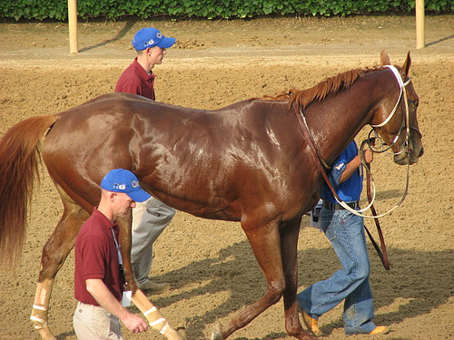working them when they are wet. This is a sign of poor horsemanship and lack of respect for your horse. When the sweat dries, it packs the hair and is irritating to your horse. Yes a horse can roll and itch this but it is not the same. This can affect the cooling system for the horse and won't let air flow until the horse gets wet again from more sweat. Is it critical or life threatening, no, but it reflects poorly on you. Be kind and help your horse out, give him a good rinse after he sweats, it cools him, removes the sticky salts and feels good. It also makes your horse get better with the hose so when it is bath time he will be better and more accepting.
Wet Horse Rolling: On the topic above, after wetting your horse, a horse will like or want to roll. I see many people stopping this and doing all kinds of things to prevent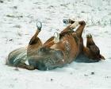 their horse from rolling. I don't get what the big deal is if a horse rolls and gets some dirt on them. I go as far as throwing dirt on my horse if he cannot roll. A horse rolls to itch his skin, to remove dry skin, to fluff their hair, to spread oils or to coat themselves in dirt or mud. Where insects are bad a good roll in the mud will put a layer on a horse to prevent bugs from biting, stinging or annoying them. Remember a horse can shake a fly off their butt, their skin is extremely sensitivity. So if your horse wants to roll, think like a horse, your horse may have good reasons for wanting to roll, so let him enjoy a good roll after a hose down. Believe me, whatever dirt he gets on him, you can brush off the next day with ease.
Neck Reining:Stop neck reining if you do not know how to do it. Neck reining is not just pulling on both reins. I see too many people just pulling on both reins and then claim their horse is neck reining. If both reins are not loose when a horse is neck reining, then you or your horse is not neck reined trained. Pulling on the neck and face and making the horse turn is NOT neck reining, it is confusing to the horse and shows poor horsemanship. So the next time someone tells you they are neck reining, check to see if the reins are loose when they turn and you will know the difference.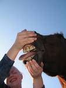Click Here to See a video on Neck Reining:
Open Mouth Cue: Your horses should allow you to open their mouth upon request. This will show your control and will allow you to inspect your horse's mouth for injury, check his teeth, clear an obstruction and deliver a wormer. If you teach this, your horse will let you grab his tongue and hold it. This is easy to teach and will show that your horse trusts you, recognizes you as the leader and submits to your request. Putting your thumb on the roof of the mouth should cause your horse to open his mouth. Not jamming your thumb or hurting him, just enough to make him uncomfortable. Click Here: See a video on How to Get a horse to Open his mouth:
Feed or Grain Buckets: I see lots of people who leave their grain buckets out between uses. This is not a good idea since birds will learn to find food there and will eat any leftover morsel of grain. This is not the problem, the problem is insects, mites, bird poop and other contaminants left over from the birds. If you do not clean these buckets each time, your horse will ingest these and other bacteria. This is NOT good for your horse's health. If you must leave your buckets out or must feed out of a bucket that was left out, it is better to wash and clean the bucket with some bleach or other disinfectant. In a pinch, you can put dirt or some hay in the bucket and scrub the bucket with the hay, straw and dirt and then dump it out before feeding. This will at least clean out some of the negative stuff.
Short Reins: This appears to be a security thing. I see many people with short reins. By short I mean no room for slack and the horse never gets complete release from pressure. I see this more with women. Which is why I think it is a security and confidence thing. For some reason, if someone has short reins they feel more in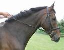 control and think they have more control over the horse. The opposite is true. The fact that you cannot feel in control with loose reins shows that you are not a confident rider and are not relaxed in the saddle. The horse knows this and will normally feel the same way. A confident rider will know that the bit or short reins will not control a horse. Understanding and trusting the horse and yourself will control a horse. I like having people who ride with short reins ride with a rope and a halter. This teaches you to control the horse with only one rein, the lead rope and to control the horse with just a halter. This builds confidence in horse and rider. It also teaches a rider to control the horse with each hand and not to try and "neck" rein a horse. Neck reining is confusing to a horse, normally because most people don't really understand the concept of neck reining. A horse needs clear cues and direction. You do that by direct reining and not by neck reining. Do your horse a favor, learn to ride in loose reins with slack, your horse will be calmer and will learn to pay more attention to your reins than if you use short reins where your horse is annoyed and learns to ignore your reins movements.
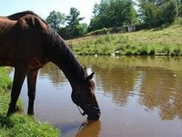Mud at Water: Allowing mud at or around your water buckets will help keep moisture in your horse's hooves and will help prevent cracking. I see people go to great lengths to keep the area dry by the watering hole. Let it get muddy, that way more mud will pack in the feet and will keep the hooves from drying out and cracking. It also helps clean the frog area, How? When a horse steps in mud, it packs in and around the sole and frog. As it dries it becomes a solid piece of hard mud, so when the horse runs or plays in pasture, the entire piece of mud flies off, pulling manure, rocks and other debris out of the hoof until the next trip to the watering hole where moisture and mud is put back in the hoof and the process repeats. Just like in the wild when horses go to a pond or stream for a drink.
Ride with Plastic bags: Lots of people use a sack out stick with plastic bags tied to it. This is used to shake and move around the horse so the horse learns to ignore the sound and will not react to plastic bags. I tied some to the end of an old lunge whip and I can make it fly like a fishing pole and casting. I can drag it behind me and the horse and use it in different ways than just the bags on a stick. Once you get your horse to ignore this on the ground, get him to ignore it while you are in the saddle. I ride my horse with my sack out stick and use it to keep flies from my horse's eyes and under his belly. So he has learned that plastic bags are his friends not a dangerous horse eater. I have a section on sacking out and here is another reference to sacking out.
Leading by the Ear:Practice leading
your horse by the ear, neck, mane or tongue. If you have done your homework,
you should be able to put your fingers in your horse's mouth and grab the
tongue. This will help the vet do inspections of teeth and gums and will
allow you to lead your horse by his tongue if you ever have to move him
without a rope or other device handy. You are NOT dragging or
pulling, you are suggesting and guiding.
*Note: Pulling hard, yanking or forcing a horse by the
tongue can cause damage to tongue & nerves - if a horse does NOT know
how to give to pressure DO NOT try and force or be rough with a horse's
tongue.
Fireworks: New Years and July 4th are two days where horses are in more danger. If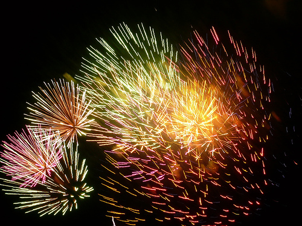 fireworks are going to be set off or used by where your horses are, take some precautions. The bright lights scare the horses and cause them to run, since the flash takes away their night vision, they are almost running blind, the chance of them running into each other, running into a ditch or running into a fence is extremely high. Be aware and take appropriate safety steps. Just being out with your horse will calm them down and give them something to focus on rather than the loud pops and bright flashing.
Hoof Care: I talked about keeping mud by the water trough, but hooves do better with a little care once a week rather than just getting care once every 6 to 8 weeks. Taking a rasp and just filing the edge of the hoof really helps prevent chips and improves the strength of the hoof. Spending just two minutes on each hoof once a week will really help keep the hoof level, stronger and prevent chips and cracks. The hoof you take care of today is the hoof you will ride on next year. Any conditioner or treatment you apply to your hoof, will help hoof coming out of the cornet band, that means, since it takes about a year for a full hoof to grow out, the hoof you condition will hit the ground in a year. See a video Click Here: to see on how to "Mustang Roll" a hoof:
Meet resistance with equal resistance: I see many riders over react to a horse's slight test or mistake. We tell our horses not to be right minded and not to react, yet I see riders react when their horse gets too close to them, moves off when mounting or taking a step forward after a halt. If the horse is giving a low-level test, do not correct with a high-level reaction. If a horse walks off after you told him to stop, think and calmly back him up a few steps. This does not have to be aggressive, loud or with kicking and hard reins pulls. Just simply recognize the test and direct the response appropriately. You can back a horse with soft hands and without kicks and yells and get the same result only better. Don't use a sledgehammer to kill a fly.Confucius said: "It is a foolish man that burns down his house to a catch a burglar." When a horse tests you, push back with equal or slightly greater pressure to overcome the resistance, not over kill with running, yelling, rough head yanks and pulls or backing with a tight bit. All of this aggression takes away from the learning part of the correction. When you go overboard, your horse is not learning, he is reacting, so he will not be sure what the lesson is. If you slow down and be more calm, the horse will understand the lesson and will learn from it. So don't back a horse 30 feet for taking one step forward. Make him get a good headset, have him step back two or three steps and release. If he submits then you did right, if he resists, then you may need to work on this later or change what you are doing. Getting your horse to submit to you, with the least amount of pressure, is your goal. Every time he submits, he tells you OK I see you as the higher horse. So do this without telling him that you are an aggressive predator on his back. Remember, he is your partner not your slave. :) Less is always better. So always try and get a result with as least pressure as needed, that way your horse learns to do more with less from you.
Feeding in Pasture: I talk about making sure you have several different piles of food for your horses in pasture, to prevent fights and disputes. However, feeding in pasture can be tricky and it is easy to set the horse up to bite you or kick you. Don't allow horses to eat hay that you are holding. They will try and grab a bite as you walk out to pasture and by accident will get your arm or hand. You may have to teach them that when you are holding hay, they must stay back. You can do this by walking around with one flake, have a whip, rope or plastic bag in the other hand, and if they try to approach, move them away. When you have to walk out in the pasture to feed, drop small piles or hand full as you walk. That way the horses will have something to eat and keep them busy while you are delivering the other piles.
Breast Collars: To use or not? I like them and use one. I like the pulling type, called a pulling harness. It stays high off the shoulder but will stop the saddle from sliding back and will also help the saddle from sliding to one side. By using a breast collar you will not need to cinch the saddle so tight and it will be more comfortable to your horse. Riding this way will force you to improve your seat since balance will be more critical to keep the saddle centered and you will not be relying on just one super tight cinch.
Saddle Blanket: Lots of choices of these. Some say use two, others say use one thick one, others use a thin one. I like wool (read about why to use wool) ones. I also like and think that saddle blankets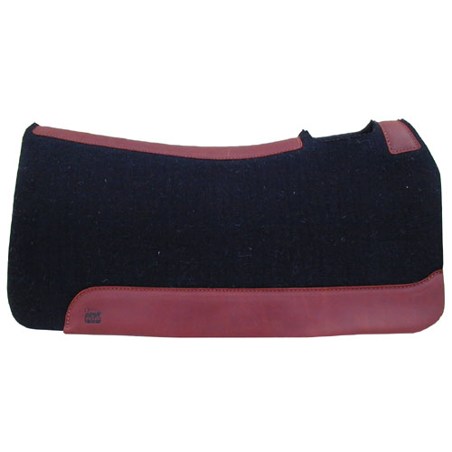 that have a curved back and hole for the center withers (shoulders) are best. If you look at a horse's back it is not straight, it is curved so using a curved blanket is reasonable and will distribute pressure more evenly. Some just ride with a thin blanket under saddle, I am not sure this is good for the horse. A blanket helps distribute weight of you and the saddle across more of the horse's body, so you minimize pressure points and pain to the horse. Too thin is not good. Too thick is not good, but better than too thin. Look at your horse's back when you remove the saddle, if you see dry spots then your saddle or pad is not fitting properly.
10-Inch Box for Your Hands: The old saying, soft hands makes soft horse, hard hands make hard horses; much like people who like to fight will have horses that like to fight; The less you move your hands, the more aware you are of what you are doing. So, when you see someone riding and their hands are all over the place, up by their face, by their shoulder, behind their hip, etc. This means they are correcting their horse verses directing. Remember, a horse needs direction not correction. By giving good solid direction to your horse and by being aware before your horse makes a mistake, you prevent problems before they occur and you prevent a correction. By having soft hands or also called quiet hands, you can feel when your horse is pulling or trying to go off in one direction, by directing the horse back to the right direction, you prevent letting him get too far and then correcting him to the right direction. So if you horse tries to bite another horse and then you snap the reins, yell at him, back him up or make a huge deal about it, I say it was your fault for not knowing he was about to bite and did not give him direction before he actually did bite. Take responsibility for what your horse does and stop blaming the horse because you failed to pay attention, you failed to see the warning signs, you were not in tune enough with your horse to read what he was going to do and did not prevent him from doing it. Keep your hands quiet when handling reins, your horse will become more responsive and you will become more aware how little you really have to move your reins and still have control of your horse.
Problems on the Way to Barn: I see lots of people try and work on problems on the way back to the barn. Some problems can be worked on and other should not be worked on. Most problems do not occur overnight or in one ride. So way do so many people try and fix running and pulling on one ride back to barn. We have all done it. You get tired, you get in a hurry, your horse gets excited, he starts pushing and pulling and you start showing him "who is boss", then you end up in a fight all the way home. After time the horse leans to expect this and as soon as you head home, they know they are about to get into a fight, so they get more upset, more excited, more high-headed and are actually getting ready for the fight they know is about to come. So then we react and it goes downhill from there. I know it is easier said than done, but try and keep your return calm, fun and relaxing. Not to mention that other riders don't want to see you fight with your horse. When you get upset and fight with your horse, you upset the other horses, you make other horses nervous and may cause others to have problems with their horses. I bet we all have heard or seen where all the horses were just "Bad " on the way back to the barn. Horses are herd animals, when they see another horse getting his butt whipped, they know. When I have to have a horsy to horsy discussion with my horse, I don't like doing it around lots of people. When no one is watching, the ego factor goes way down. Ego is one the worst things that interferes with training your horse. Remember having a horse is about a loving caring relationship with your partner, it is not all about being in charge, being right, controlling every detail and teaching the horse who is boss all the time. If you were a horse, wouldn't you like to get back to the barn so you could eat, get that saddle and 150 pounds off your back, get that hot saddle and tight cinch off and be in a safe environment with your friends? Of course you would, so try and understand what your horse is thinking when you respond or react to his behavior. This does not mean allow your horse to run back, but try and deal with it from a horse's point of view. I assure you, your horse is not saying: OK, here we go, this is where I get to piss off mom or dad, watch this, I will start ignoring them and they will get pissed, I stop paying attention and watch me get them mad, bla bla bla. That is something people would do, but not a horse. Sometimes watching people respond to their horse, I really think people believe their horse is actually thinking like this, it ain't so. Your horse is just being a horse. Give him direction and so you do not have to give correction.
Riding vs. Understanding: There is a big difference between riding a horse and understanding a horse. I am always suspicious when someone starts telling me how they rode horses all the time as a kid. Sitting on a horse may be riding, but you are not communicating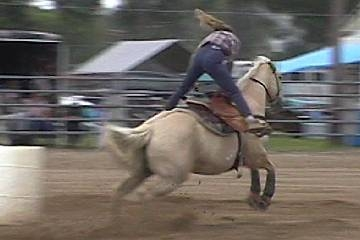 and you don't have a understanding about how a horse thinks or why a horse is what it is. Until you study the horse (which most do not), you cannot know what you need to know to understand a horse. So people may have owned or ridden horses for 20 years, yet they still only have maybe one year of experience 20 times. I have these types of people come up to me when I am working with my horse and tell me what I should be doing. I have had people reach over and grab my horse by the halter when I am holding the lead rope. I have had people adjust my equipment while I am in the saddle. People do this thinking they are helping and it is very impolite and dangerous. If you really understand a horse, then you will know and will wait for someone to ask you. And they will, they may not listen to what you tell them, but they will ask. The ones that want to tell you how, what to do with your horse, are not being asked for a reason, and that is why they have this need to volunteer. Real experienced horsemen do not need to tell someone what they know, you can see it in the way they handle their horses and the way their horse's respond to them. The real judge of a good horseman is the Horse!
Old Halters: Don't throw away those old halters and lead ropes. When a halter breaks don't throw it away, cut it up and keep the solid steel or brass rings. They make great gate latches, tie points and can be used for many things. Same for the lead ropes. Just because the snap breaks (you should not be using ropes with snaps) the rope is still good. You can tie them together for a catch rope, you can use them for a high line, keep them for later and will find some use for them.
Hot Weather: When it gets really hot
your horse sweats a lot. You will see the dry salt on his coat. Take a few
minutes and hose your friend off. This will remove the sticky salt and help
your horse's cooling system. This is also a good clue to make sure that your
horses have a salt block/mineral block
available to replace all this salt loss. The more you hose your horse off,
the more they will get used to it and like it. They will resist it less and
it will keep their coat clean and healthy. And don't stop or prevent them
from rolling. Horses love to roll in the dirt after they get wet. This
itches the skin, massages the dry skin, distributes the oils and creates a
nice sunscreen and bug protection. After a horse rolls the dirt that sticks
like mud will help keep flies off, will help the horse not feel the flies,
and will prevent mosquitoes from biting. So a dirty horse is good. So what
if you have to brush him before you saddle or ride, you should be doing that
anyway.
salt block/mineral block
available to replace all this salt loss. The more you hose your horse off,
the more they will get used to it and like it. They will resist it less and
it will keep their coat clean and healthy. And don't stop or prevent them
from rolling. Horses love to roll in the dirt after they get wet. This
itches the skin, massages the dry skin, distributes the oils and creates a
nice sunscreen and bug protection. After a horse rolls the dirt that sticks
like mud will help keep flies off, will help the horse not feel the flies,
and will prevent mosquitoes from biting. So a dirty horse is good. So what
if you have to brush him before you saddle or ride, you should be doing that
anyway.
Begging verses Asking: If you ask a horse 10 times to do something you teach him to not listen the first nine times you asked. I think you should always ask nicely at first but then you have to turn up the heat. Some say the difference between a good horse and a great horse is how it is asked to do something. Some believe that if I ask nicely and you don't get your horse to respond then you just bought some trouble hard and fast. Others believe that you ask several times with increasing pressure until you get the proper response. I think somewhere in between is fine. If my horse knows something good and I know he knows it well, then I will only ask once and then let him know he should have responded to my request. However, if he is slow or worried or paying attention to something else, then I will give a couple of requests and try to get the horse to respond to me. I never want to fight or look for a fight with my horse, which only teaches a horse to fight and fear me. So I am always searching on how to set my horse up for success and to get my result with the least amount of pressure or resistance. I can always get aggressive and scare my horse to move, that is not good horsemanship. My goal should be to remove fear and never to create it. Pain = fear, fear = reactions, reactions do not = learning. I find that the louder and more vocal a rider or handler is, the less they understand a horse. Talking and explaining to a horse does nothing for the horse, it is normally done to try and justify what is being done to the horse and is done for other people watching. The best horsemen get results quietly, calmly and with hardly no movements. When people look and wonder how the horse knows what to do since they can't see the rider doing much, that is the sign of a horseman. When you see yelling, yanking on the bit, screaming, kicking, and flopping in the saddle, that is not good horsemanship and normally confuses the horse and makes the horse nervous and scared and creates a fear response.
Round Penning 101: The round pen is NOT a correction tool or a torture chamber. However, that is what it is used for a lot of the time. Anyone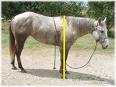 can chase a horse in a round pen. Understanding the drive line, getting inside and outside turns, getting your horse to look to you for direction, getting the horse to move slowly and to change directions smoothly, to come to you when called, to be calm in the round pen and to enjoy it rather than fear it or look at it as punishment and or pain. The yellow line is the drive line, I call it the shoulder. Use the round corral for training and understanding and not for correction and punishment. Understand what a drive line is and how to use it. I discuss this in more detail on my horsemanship page under round penning.
Creating Fear and lost trust: People tell me all the time how they put plastic bags and other scary things in their horse's stall, since their horse is scared of them. This is not a good way to sack out a horse. If you sack out a horse you want to be able to apply pressure and remove pressure when the horse gives the right response. When putting things in stalls, you cannot remove or control the pressure. You are just creating fear for your horse and your horse does not learn. He may eventually learn to ignore the scary items you force him to live with. In addition, in his stall, this may work, but once he runs into the scary object outside the stall, he will still have fear. The stall technique will not build trust between you and him and will not accomplish what you hope. Think about it, if you were deathly afraid of snakes, so I decided to put several snakes in your bedroom and lock the door. Would that really help your fear of snakes? No, it would make you think I was a jerk, it would make you not like your bedroom, it would make it so you could not relax in your bedroom and would cause you not to like being in your bedroom. A horse already dislikes being locked up and stalled; you really don't need to make him dislike it more. Once again, this is "cheat" and a shortcut and that rarely works with horses. When you take the time to work with your horse, to teach it to trust you, you show the horse that if he stands still, you will make the scary thing go away. You show the horse that you will not hurt it and if he trusts you, you will keep him safe. You show the horse that you understand him and you know when he gets too scared so you can make the scary thing go away and he can relax and take a break. You show him that you control the scary thing. You show him that as long as the horse does not react, you will make the scary thing release pressure. All of this will help you learn your horse, will teach you to read your horse better and will develop a bond with you and your horse. So if you are not concerned with helping your horse go ahead and park a tractor in his stall to "teach him a lesson" for being scared of a tractor.
Horse of a 1000 rides: Too many people want a perfect horse from riding it three times a week or every weekend or only in an arena for 10 minutes five times a week, it just won't happen. Horses are habit creatures, they learn by repetition and doing things over and over. So after about a 1000 rides you can make a good broke horse. And don't forget, practice does not make perfect. If you practice wrong for a year, it will teach wrong. Perfect practice makes perfect. If you ride your horse every day for three years, you will ride it over 1000 rides. Is anyone going to do that? No, it is not reasonable. I know people that have owned horses "their entire life" and have not ridden 1000 times. The point here is it takes lots and lots of doing to get results. So be fair to your horse, don't expect perfection from riding two times a week or a few times a month, it is not fair to the horse. Accept small advances, notice the small improvements, grow with your horse and don't blame the horse for not growing as fast as you think he should. Enjoy the journey and help him grow positively with guidance and direction. And if you have had a 1000 rides, then maybe the last few hundred were really the ones that mattered. Soft quiet hands will show in your experience and understanding of the horse.
Tie Downs: I see more and more use of tie downs. A very real danger of a tie down is when someone forgets that the horse has one on and then takes the horse to water. A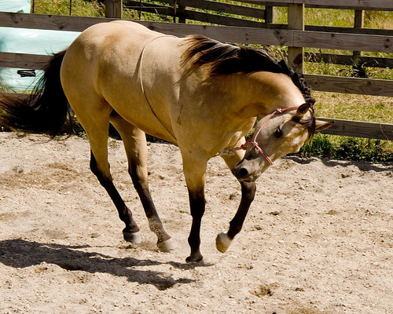 horse cannot swim with a tie down, it cannot raise his head and will drown if taken in water while wearing one. This is very easy to forget if your horse wears on all the time. So besides the fact that a tie down is a cheat, it teaches a horse to pull, it teaches a horse to be hard and not soft, shows a lack of training in the horse and rider, besides all those bad side effects of it, it will kill your horse if your horse gets into water while wearing one. I am sure there is someone out their going, I never put my horse in water so I don't have to worry about this, well if your horse ever gets spooked and runs off or chased and ends up in water, he will die. Some use these to get a horse's neck sore and worn out so the horse will hang his head low at a show. I guess the moral of this is with all the bad that comes with tie downs, why do so many still use them?
Stud Chains: It still amazes me on the number of people that use stud chains. It is like people that wear spurs. I think it somehow it makes them think they are rough 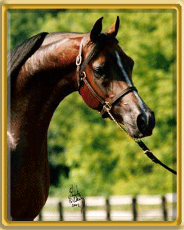and tough since they have to use or wear spurs and chains to control their horse. Stud chains are mean and hurt the horse. I assure you I can control any horse with a rope halter better than anyone can control a horse with a stud chain. If you see a good horseman he will not have to use a stud chain on his Stud, so why in the heck do so many women want to use one on their horse. Is it a compensation thing? Does using this chain make them feel tough like they have such a mean horse that they need this to control him? A stud chain should send one clear message, the person using it has little horsemanship skills and they don't know what they are doing. So please don't be impressed and let the person know that using a stud chain does not impress you or the horse. The damn things should be outlawed to protect the idiots who use them from doing more damage to themselves and the horse.
Wash your Halters: I see people wash their horses, clean their saddles and clean their stalls, but people seem to overlook their halter and lead ropes. By washing your halters and lead ropes you remove the sweat and salt that comes from your horse. This salt and sweat attracts flies which irritates your horses. Ever see a horse tied up and the flies seem to be all around the face and halter. Do your horses a favor, wash your halters, and lead rope to remove the sweat and salts. You can even spray them down with fly spray before putting them on and it will help keep flies off their face. Washing your horse with his halter on is not the same thing, but it may help. Your horse will thank you for thinking of ways to make him more comfortable.
Movement burns Adrenaline: Making a horse stand when scared or fearful may backfire on you. Moving feet help a horse release stress and assures them that they can move and still run. A trapped horse can go into "fight" mode if they feel cornered and think they cannot move. The next time your horse gets a little nervous or anxious move their feet, let them walk around a bit, let them know they are not trapped. By forcing a horse to stand still and not allowing them to move will not help them relax. It can make them feel more tense and stressed and may force a blow up, blot, rear or buck. By letting them move their feet, but controlling them, you tell them they are not trapped, you are still in charge, you are calm and in control, and you are still the leader, all of which will help them calm down, feel secure and keep their mind on you and not on their fear. The flip side of this is to get rough, start yelling and yanking on the bit, start blaming the horse for being stupid, showing them who is the boss and making them stand still with force, fear and pain. This will create more fear, tears down trust, shows the horse you don't understand his fear and can make the horse believe he is really in more danger since he is scared and being hurt by YOU, his leader who he should trust.
Horse Play with horses:
Horses are great fun and love to work and play. The term "No horseplay" came about with good reason. All horses love
to play. People enjoy using horses for play and fun as well. In the mud, by
hanging onto a horse's tail they can pull you with ease while you slide
behind them. I have seen horses pull boats in water, pull people on sleds
and many other games. There is always the chance of horses or people getting
hurt during this. If you do this or watch this, remember, it is not the
horse's fault for anything that happens. He is just being a horse doing what
we make him do.
"No horseplay" came about with good reason. All horses love
to play. People enjoy using horses for play and fun as well. In the mud, by
hanging onto a horse's tail they can pull you with ease while you slide
behind them. I have seen horses pull boats in water, pull people on sleds
and many other games. There is always the chance of horses or people getting
hurt during this. If you do this or watch this, remember, it is not the
horse's fault for anything that happens. He is just being a horse doing what
we make him do.
Horse Eating Straw: I will say it
again in case you missed it the other 10 times I mentioned it. Too much time
in a stall is not good for horses. Some people use straw for beddings. The
three most common bedding being used is straw, shavings or pellets. Each has
good and bad points. Shavings (sawdust) remove moisture from the feet more
and can cause dust (respiratory) problems for some horses, but soaking up
urine really good. Straw does not absorb urine as well, but is easier to
remove and makes better bedding (cushioning) for the horse and tends to be
cheaper. Straw is more natural and if a horse eats some with his food, it
 will not kill him. However, some horses want to eat the
straw like hay (I think this is from boredom or hunger). Straw is the
by-product (dry stalk) of cereal plants (barley, oat, rice, rye, wheat).
Since straw is dry and can be sharp it can cause injuries to the nose and
eyes it poked the wrong way. Straw is fed to cattle as a roughage
supplement. As it digests in the gut, it creates heat and keeps them warm.
Concerns with straw are it is dry and can cause or contribute to impaction
colic. So you do NOT want to use it as a primary food source and you should
probably limit it from a horse's diet. Some things I have heard to help stop
horses from eating straw is, you can put wet (urine soaked) straw on top of
your other straw. The horse will not normally eat wet, soiled or urine
soaked straw. Some horses develop a cough from eating straw, maybe because
it is dry and dusty or some say it is mold spores in straw that cause it.
Some people say straw has good fiber and no calories so let them eat it.
Others say spray the straw with vinegar to stop a horse from eating it. Is a
horse eating some straw a major problem, depends on you and your horse. It
is something to be aware of and to keep an eye on. The less time a horse is
in a stall with straw, the less he will eat it. I think if you are feeding
your horse well he will not eat it, since it is hard and not as good as
other hay you are feeding. However, if locked up in a stall for too long, a
horse will chew wood, chew poles, wind suck, crib, sway or eat straw out of
boredom. If you don't feed your horse for 12 to 24 hours and a horse gets
hungry, they will eat most anything to stay alive. If you use straw, feed
your horse and keep him out of stall as much as possible.
will not kill him. However, some horses want to eat the
straw like hay (I think this is from boredom or hunger). Straw is the
by-product (dry stalk) of cereal plants (barley, oat, rice, rye, wheat).
Since straw is dry and can be sharp it can cause injuries to the nose and
eyes it poked the wrong way. Straw is fed to cattle as a roughage
supplement. As it digests in the gut, it creates heat and keeps them warm.
Concerns with straw are it is dry and can cause or contribute to impaction
colic. So you do NOT want to use it as a primary food source and you should
probably limit it from a horse's diet. Some things I have heard to help stop
horses from eating straw is, you can put wet (urine soaked) straw on top of
your other straw. The horse will not normally eat wet, soiled or urine
soaked straw. Some horses develop a cough from eating straw, maybe because
it is dry and dusty or some say it is mold spores in straw that cause it.
Some people say straw has good fiber and no calories so let them eat it.
Others say spray the straw with vinegar to stop a horse from eating it. Is a
horse eating some straw a major problem, depends on you and your horse. It
is something to be aware of and to keep an eye on. The less time a horse is
in a stall with straw, the less he will eat it. I think if you are feeding
your horse well he will not eat it, since it is hard and not as good as
other hay you are feeding. However, if locked up in a stall for too long, a
horse will chew wood, chew poles, wind suck, crib, sway or eat straw out of
boredom. If you don't feed your horse for 12 to 24 hours and a horse gets
hungry, they will eat most anything to stay alive. If you use straw, feed
your horse and keep him out of stall as much as possible.
**Staying warm tip: Straw stuffed under your jacket, pants, in bags laid on the ground can keep you warn by providing good insulation from the cold**
Tail Pulling: This is a bad position to be in, so be aware of the danger. I like to pull and stretch my horse's tail. This has to be slow and gentle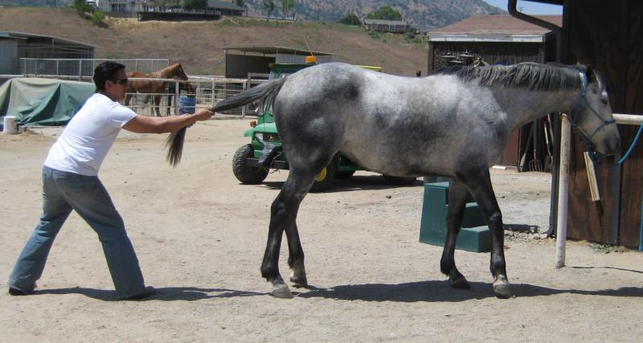 and calming not a fight. Grab the tail just below the end of the tailbone or towards the last foot of the tail. Align with the horse's spine. Slowly increase pressure straight out and slightly down from the horse's back. You can hold it for a few seconds and even hear pops in the back and tail. Slowly release the tail. This is about the worst place to be if a horse decides to kick, so you had better be aware of your horse's mood and behavior. Any signs of nervous behavior, you might want to just move the tail around softly and make sure your horse is OK with you doing what you are doing. This is another trust exercise and it will build trust in both you and the horse.
Wash Your Cinch: After a few rides where you horse sweats, your cinch will become salty, rough and stiff. Even if you just take it off and rinse it off, you will remove salts, make it softer for your horse and will make it last longer. For the comfort of your horse, wash it after every few rides.
Used Wormer Syringes: Save those old wormer syringes for later uses. They come in handy when training a new horse to accept wormers or to work with a horse that has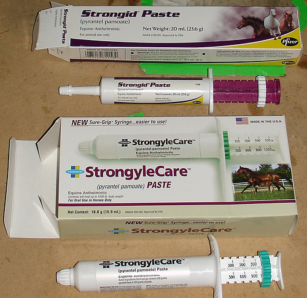 soured on being wormed. Take an old wormer and wash it out good. Then load it up with some applesauce and give it to your horse as a treat. Your horse will start loving the dreaded white tube you put in his mouth. After a few treats of applesauce you can bet the next time you worm, the horse will help you and not fight it. They can also be used to give your horse medicine, crush up a pill, put in some water and load into the old wormer. If your horse has a cut, you use the old wormer to apply some alcohol or peroxide. Load it up with peroxide or alcohol and you can squirt it onto the cut or injury.
Kotex Pads: They make a great pad for a cut. Keep some in your medicine bag. A little duct tape on one can stop bleeding, apply medicine or help pad an injury. They may not be manly, but they sure do work well.
High Lining or Picket Lines: Tying a horse to a high line or rope between two trees is a good way to secure your horses when no pens or corrals are available. However,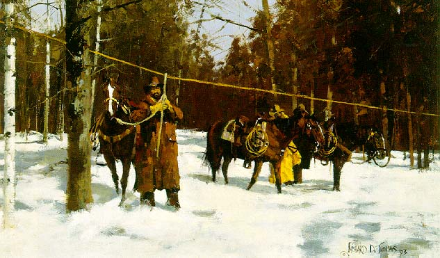 you have to teach it and expose the horse to it before just doing it. I have put a drawing of some knots to help set up a picket line. High Lining is nothing more than tying your horse high. The problem is when a horse has not been taught to tie well and is a puller. If a horse pulls a high line, it shakes and moves the line, which ALL horses will feel that are tied to the line. A horse has to be taught that the line moving is no big deal. Other ways to secure a horse is to make a temporary pen with rope around four trees. This would have to be taught as well or the horse would over, under or through it. You can use hobbles if your horse has been trained to accept them or you can do what is called ground tying. Ground tying is tying your horse to a stump, log or by burying the rope in a hope and pounding dirt over it with your heel. Of course your horse has to know how to not step on the rope, how to NOT panic if the rope gets around his legs and to give to the pressure of the rope. As you can tell, no matter what method you use, you have to put time in to prepare the horse for success and to protect the horse from itself.
Snakebite: If you ride in an area
where snakes are plentiful you may want to carry some pieces of cut garden
hose with you. If you trailer out a lot and you may want to keep some hose
in your trailer tack room  in case your horse or someone
else's horse gets bit. Horses like dogs normally get bit in the face when
investigating a snake. When this area swells, it cuts off the air supply. By
inserting some hose into the nostrils, you can save your horse until you get
to a vet. Remember a horse can't breathe through their mouth, so if their
nose airway is lost they will die. You can secure the hose with duct tape or
other medical tape.These are some good links to more info about horse bites:
in case your horse or someone
else's horse gets bit. Horses like dogs normally get bit in the face when
investigating a snake. When this area swells, it cuts off the air supply. By
inserting some hose into the nostrils, you can save your horse until you get
to a vet. Remember a horse can't breathe through their mouth, so if their
nose airway is lost they will die. You can secure the hose with duct tape or
other medical tape.These are some good links to more info about horse bites:
http://www.youtube.com/watch?v=VMzvUW6XO-o(Warning: Don't watch while eating, this show the how much pressure, fluid, infection and heat can build up in a (abscess) from a snake bite)
http://www.horses-and-horse-information.com
http://www.whmentors.org/saf/snakes.html
http://www.thehorse.com/ViewArticle.aspx?ID=6165
Chestnuts: These are the callous like growths located on the inside of the legs by the knees of the horse. They are also called "night eyes". These continue to grow and need to be peeled off once and a while. By putting some baby oil on them or rubbing them with Corona Ointment, which contains lanolin, will soften them up and the next day you can peel them off easily without any discomfort to the horse. They say chestnuts are like whorls, they are unique as fingerprints.
Proud Cut Geldings: This is a term that refers to a gelding that still acts like or behaves like a Stallion (Stud). Some of these behaviors can be herding, snaking, mounting mares, chasing or charging other geldings and just a very dominant disposition. Some say this is caused by not having all the testicular tissue removed by the person that gelded the horse. I think it also has to do with how old the horse was when he was gelded. The longer a horse remains a Stud, the more traits he will keep after he is finally cut. Testosterone is produced and this can be an additional factor for this behavior. Some people say this behavior can be caused by an overactive adrenal gland. No matter the cause, this is not the horse's fault and is all instinctive behavior.
The Flehmen Response:(Pronounced: Flea man) This is when a horse lifts his upper lip and raises his head as if he is investigating a smell. He will lift and wrinkle his upper lip and it may appear to flutter. This is normally done when a male smells a mare in heat. Mares will do it when they are smelling their newborn foal. It is a way to allow the smell to reach the chemical receptors that are located in the roof of the mouth. Some say it looks like a horse is laughing; others confuse it as a sign of aggression since the neck is stretched out and the teeth are exposed. Neither is correct, but myths have a way of staying around and are believed by many.
Snaking: This term is not heard much nowadays. It is most common when a stallion is moving or herding a mare. It is done to show dominance and to move the mare to show that the Stud is interested and is claiming his mare. The horse will lower its head and point and direct it at the target horse or group of horses. Normally the other horse will move away and will follow the directions of the snaking horse. Sometimes a mare will snake it's foal. I think this is done to teach the foal to respect the mom and to claim the foal, much like when a stud does it to a mare. I have a series of videos on YouTube where I show my Mustang snaking his Mares.
Washing Water Buckets: The Best way I have found to keep water buckets clean is Bleach. Put straight bleach in a spray bottle; drain the water bucket, spray bleach all over the inside of the bucket, let sit for about 2 to 3 minutes, rinse and fill. When you wash your water buckets use your horse brushes to scrub them clean. That way you clean your buckets and your horse brushes at the same time. Cleaning your brushes help prevent fungus and other hair issues from becoming a problem that you keep passing on.
Grooming in the herd: As I said
before, you and your horse are a herd of two. Hopefully you are higher than
your horse and you and seen as the head leader. When you watch a herd you
will see horses standing shoulder to shoulder, facing each other's butt.
They will groom each other in areas that they cannot reach alone. This is
just another example  of how the herd works together. Most
of the time the two horses doing this will be either buddies or close in
ranking within the herd. You will not see the herd leader grooming the
lowest ranking horse, unless there are only two or three horses in the herd.
So when you groom your horse, realize this. By grooming your horse, you
stimulate herd behavior and build a herd bond with your horse. However, you
must be aware that your horse, being a horse, will try and return the favor
and may try and groom you. This is not bad, mean or aggressive. He is just
being a good herd mate. So please don't over react and slap him, hit him,
accuse him of trying to bite you, beat him for putting his teeth on you. You
can let him know, thanks but no thanks. Moving your elbow or hand, making a
blocking move, or pushing on his nose and telling him no, will send a
message you don't want him to groom you. Don't ruin his bonding experience
by slapping or hitting your horse.
of how the herd works together. Most
of the time the two horses doing this will be either buddies or close in
ranking within the herd. You will not see the herd leader grooming the
lowest ranking horse, unless there are only two or three horses in the herd.
So when you groom your horse, realize this. By grooming your horse, you
stimulate herd behavior and build a herd bond with your horse. However, you
must be aware that your horse, being a horse, will try and return the favor
and may try and groom you. This is not bad, mean or aggressive. He is just
being a good herd mate. So please don't over react and slap him, hit him,
accuse him of trying to bite you, beat him for putting his teeth on you. You
can let him know, thanks but no thanks. Moving your elbow or hand, making a
blocking move, or pushing on his nose and telling him no, will send a
message you don't want him to groom you. Don't ruin his bonding experience
by slapping or hitting your horse.
Fresh Water in Winter:Everyone knows that horses need lots of good clean water in the summer, but people overlook this in the winter. A horse needs about 10 gallons of water a day, in the winter when it is cold and the water is cold, horses do not drink as much. This can cause impaction colic or dehydration. A horse will not break ice to get to water (normally) and will not eat snow to get it either. There are many ways to keep water from icing over. Many people use heaters to warm water, even if you don't have really cold temps, you can still warm the water to encourage a horse to drink and to help him stay warm. A nice old way is to use old tires. If you stack three or four tires (all the way to the top of the water bucket) and stuff the tires with straw, the water will not ice over. The straw or hay insulates the bucket and prevents the water from freezing. Remember not to neglect your horse in the winter even if it is cold, wet, rainy, windy or whatever else is there. Your horse needs you more and is relying on you for his feed, warmth, food and water.
Alfalfa or Alfalfa Pellets: There is a lot of controversy on this feed. It has lots of protein and calcium. The pellets have about 17% protein and lots of calcium. Is this good or bad? Depends on the horse. High calcium can throw off mineral balances which can cause tying up in some horses. Too much protein can cause a list of other problems. Alfalfa was developed for dairy cows that produce milk and needed this high energy feed. Then the racing horse crowd thought it would be good to feed the race horses since they are run too much and too young. Then some how other horse people bought into this and now alfalfa seems to be the hay of choice in many places. Growers love it since they can get 6 to 8 cuttings per year. If you feed it, the later the cuts the better, first, second and third cuts are still a little rich for horses. It is better to use alfalfa as a partial feed and not a primary feed. It is not a grass hay and causes more colic than grass hay. The pellets have more consistency and may be better but the cubes can choke a horse and cause a horse to eat too fast, not chew as well and not digest as well. A variety of hay is best for the horse, some rye, some oat, some grass and some alfalfa will help a horse get a variety of vitamins and minerals and keeps their internal systems working best.
Bad Horse Training: Just because someone can train a horse to do something, does not mean that he is a good trainer or that what is trained is good for the horse. I say you can teach a horse to stand on one leg if you use enough drugs, pain or electricity. Horses have a natural fear that is built in, dealing with that fear from a humane position and not from a brutal predator ego position. Cutting the nerve endings in a tail so it will not swish during shows, cutting the nerves in the ears so the horse looks relaxed in shows, putting ball bearings in the frog so a horse will high step, using barbed wire as a bit are all mean and cruel things to do to a horse. Most people that do these things are referred to as trainers or good horsemen, since their methods are unknown. Both the photos above are total acts of cruelty. Both these horses are scared to death and are trained by fear, a fear greater than their natural instinct to live and survive. People who don't know or understand a horse think this kind of thing is neat, I think it is criminal. Don't be impressed by what a horse can do, be impressed by what is done to get a horse to do something. Kind and understanding training should be impressive, know the difference.
Horse Treats: Frozen grapes make a
good treat for your horse along with raisins. Other good treats are apple
juice, watermelon, bananas, fig bars, peanut butter, breakfast
cereal, peppermints, corn bread, granola bars, oatmeal cookies, apples, and
of course carrots. Some say horses love beer, but I am concerned about the
carbonation in drinks that may cause colic, so I don't give my guys
carbonated drinks. Others say that by adding a little apple cider to your
horse's water will help with flies. Roll a watermelon out to pasture and
watch the horses break it open with their hooves and enjoy the sweetness and
get good fiber from the rind. Another good treat is to cut up some
watermelon and put it in a bowl with water, then freeze it, on a hot day
bring it out and put in the feed bowl, the horses love it, it is cold, sweet
and refreshing.
bars, peanut butter, breakfast
cereal, peppermints, corn bread, granola bars, oatmeal cookies, apples, and
of course carrots. Some say horses love beer, but I am concerned about the
carbonation in drinks that may cause colic, so I don't give my guys
carbonated drinks. Others say that by adding a little apple cider to your
horse's water will help with flies. Roll a watermelon out to pasture and
watch the horses break it open with their hooves and enjoy the sweetness and
get good fiber from the rind. Another good treat is to cut up some
watermelon and put it in a bowl with water, then freeze it, on a hot day
bring it out and put in the feed bowl, the horses love it, it is cold, sweet
and refreshing.
Homemade Fly Repellents: Mix some Avon Skin so Soft, white vinegar and Ivory liquid soap and try it out. Another one is Listerine, eucalyptus oil and citronella oil, or try apple cider vinegar, herbal tea, eucalyptus oil, citronella oil, lavender oil, tea tree oil, cedar oil, emulsifier like polysorbate. Mix and match to make your own, some use pine sol in their spray, not sure if it works but it smells clean.
This recipe was passed on to me, I have tried it and think it works pretty
good. I was told it is great for repelling flies and mosquitoes!
1 cup Skin So Soft Bath Oil
1 cup Water
1 cup White Vinegar
1 cup Peppermint Scope (or other Peppermint Mouthwash)
Being Too Gentle: This is an area where people set horses up for failure. I heard of this rescue place where people were not allowed to talk around the horses and anyone coming to see a horse must whisper so not to disturb or upset the horses. Then this person was told by staff at this rescue place that the horse may not want to come of it's stall today, so you may have to come back to see the horse another time. This is so bad for the horses. Basically, these horses are being taught to expect whispers and total quiet, so they are being set up for failure. When someone talks normal or moves normal or something unplanned happens, these horses will be scared and will react with fear. This is the same thing that happens when people sneak around a horse with a saddle, plastic bag or other things. You can't protect horses from life, so don't try. Flop straps on your saddle routinely, let the stirrups flop around, drop buckets, drop the lead rope, toss your hat at your horse's feet, drag the hose across his legs, throw your jacket over his neck, drop the rake, bump him with a gate, roll the wheel barrel into him and anything that you think might scare him, do it as a matter of routine. Soon your horse will think when you are around crazy things happen, soon he will ignore these crazy things, soon he will not react to much when he is with you and soon you will have a horse that does not spook much and ignores most things. This sets the horse up for success. Since you can't control everything on a trail ride, in an arena or other people, getting your horse to expect and accept strange things helps him deal with other unplanned things that he will inevitably be exposed to at some time. After your horse gets good at accepting anything you throw at him, it will become a challenge for you to find things to make him react, then you can go on search missions to try and find something new to get him to react, it will get harder and harder to find things. So don't be too gentle and protective that you set your horse up for failure. The picture of the rocks, snow and paint horses is a Bev Dolittle painting, there are five paint horses in the picture if you can find them.
Horse Leg Markings: The following is how leg markings are described.
From left to right these markings are called Coronet, Pastern, Sock, Stocking.
Hay and Rocks: Some people feed hay in buckets, feeders, tires, old water buckets and other places. If you feed in any place that collects the falling hay or where you lay the hay in something, make sure and check this periodically, especially if you also feed grain in this same container. Hay is cut and baled by machines. It is not uncommon to find dead snakes, birds, mice, sprinkler heads, tools, or rocks in the middle of a flake of hay. The bigger items you will normally see, however small rocks will fall to the bottom and will collect. Horses have pretty sensitive lips and will normally shift through these and will not intentionally eat them. However, I have seen where people do not clean their feed containers and over time, within a few months, there are lots of small rocks and pebbles at the bottom, then grain is fed in this same container and the horse has to shift through the rocks and pebbles. This is not good for the horse in a few ways, you don't want your horse eating rocks, it can crack or chip a tooth, it can cut the inside of a lip or gums and can collect in the stomach. Do your horse a favor and keep the rocks out of his grain and hay bins.
Pay Attention to your Horse: This is the number one cause of most problems that occur with horses and get them disciplined. When people are talking, or watching someone else, on the phone, giving advice or just daydreaming a horse knows and feels this. When people are doing all this what they are not doing is paying attention to their horse. A horse knows what is going to happen before it happens. Why, that is how they stay alive, if they stop paying attention they get eaten, injured or die. It is that simple for a horse. So unless they know you are paying attention they will not relax, in fact they will get nervous, tense and insecure. Horsemen will always be in touch, reading or in tune with their horse. It becomes second nature over time. After years of riding, practice and picking yourself up off the ground, you learn the importance of this. Watch other people, if you see someone disciplining their horse, I almost bet they were involved in a conversation, talking to someone and NOT paying attention to their horse. So the horse moved, walked off or did not listen and BANG, the rider Blamed the Horse! I have done it and see it done way too often, it is not fair to the horse. If you pay attention to your horse, you will know when he is about to do something and you can prevent it with guidance and direction rather than letting him do it and then correcting or blaming him for it. Be a responsible partner and be fair to your horse.
Clacking of Teeth by Babies: The clacking of
teeth by youngsters is normal baby talk behavior. It is done by young horses
to show submission, to acknowledge their lower position and to communicate
that they are not a threat. They will normally lower their head and  stretch their neck out to further demonstrate their
non-threatening intentions. I have heard that submissive females will "teeth
clack" when mating with a donkey. I have only seen young horses do this
behavior or even an older horse that is meeting a new horse and wants to be
friends will sometimes clack their teeth as a way to be non-threatening and
to say, "hey I just want to be friends, don't hurt me. When babies exhibit
this behavior they will sometimes also do the Flehmen response, curling the
lip, raising the head and showing teeth, this action allows the smell to
reach chemical receptors in the roof of the mouth. So if a horse clacks his
teeth at you, they are not being aggressive, in fact it is the opposite,
they are being submissive and requesting your permission to be friends.
stretch their neck out to further demonstrate their
non-threatening intentions. I have heard that submissive females will "teeth
clack" when mating with a donkey. I have only seen young horses do this
behavior or even an older horse that is meeting a new horse and wants to be
friends will sometimes clack their teeth as a way to be non-threatening and
to say, "hey I just want to be friends, don't hurt me. When babies exhibit
this behavior they will sometimes also do the Flehmen response, curling the
lip, raising the head and showing teeth, this action allows the smell to
reach chemical receptors in the roof of the mouth. So if a horse clacks his
teeth at you, they are not being aggressive, in fact it is the opposite,
they are being submissive and requesting your permission to be friends.
What's a War Bridle:


This is a way to control a horse when no bridle or bit is available or if you want to use a bitless bridle. If your headstall ever breaks or gets torn off by a tree branch or fence or if you ever end up face to face with a loose horse, this is a good way to gain control over a horse. It can also be used for a little extra control if a horse is hurt or needs medical attention. It can be very harsh so I do not recommend it to anyone that is too rough or relies on force too much. The Indians (native Americans) would ride in these bridles for extra control. This bridle can also be used to lay down a horse in a crisis. Here is a good video of how a variation of the war bridle can be used. In this video, he uses a stiff rope, which is rough, and hard on the horse. I prefer using a softer, more flexible rope so it is not that hard on the horse. A war bridle can be really severe in the wrong hands, don't let someone use one of these on your horse without you there and if you use one realize you may get a large reaction if you are too rough.
Hot Weather Tips: Always provide
plenty of fresh, clean and cool water. Horses can go for days without eating
but need water to survive. If you are working your
horse in hot weather, stop and give him a drink at least every half-hour.
Adding ice to your horse's water will often encourage them to drink. Be sure
your horse's water is in the shade. If you place water buckets in the direct
sun,
the water can get so hot that your horse can't drink it and he could scald
his lips. You can wear a hat, wipe your face and neck with a cool wet cloth.
Your horse can't wear a hat, but you can wet their head and face or sponge
it off with cool water. Always walk your horse to cool him down; moving
muscles dissipate heat better than resting muscles. Make sure your horse has
plenty of 'free choice' salt during hot weather. Most horses will sweat
enough to need about 4 ounces of salt a day. Salt blocks won't always be
enough, you can toss some table salt on their hay and they will eat what
they need. If you can, stable your horse during the heat of the day and turn
him out in the cool of the night. Without the aid of an insect repellent, a
horse will stand in the sun to keep bugs away. If your horse has a lot of
white on his face, use zinc oxide cream to avoid a sunburned nose or
leave it dirty and don't wash the dirt off, the dirt will act as a natural
sun block. If traveling during hot weather, stop often and sponge the
horse's head and neck during rest stops. You can also put wood shavings on
the trailer floor and Wet the shavings before the trip. The damp shavings
will help keep the horse's feet cooler. The flip side is the shavings will
blow around and get in the horse's eyes and nose.
Horse shoes? Good and Bad: I
personally am not a shoe fan. I think it  creates just as
many problems as it solves. Hot nails, abscess, prevents hoof movement,
compromises the hoof wall and more. Here is a great picture
of the hoof and how it should work (this site won't allow it to work, so
click on the picture to see it work). Without a shoe it can work this way,
with a shoe it cannot. Shod horse's have more leg and tendon problems than
non-shod horses. This is because the shoe prevents hoof movement and
transfers all jars, bumps, slams and impacts straight from the hard shoe to
the hoof and leg. In the old days, race cars were made of steel and were
indestructible. This was done to protect the driver. Well what they found
out is all the impact of a wreck was transferred to the driver since the car
was so strong and it actually did more damage and injury to the driver.
Which is why today, cars fall apart and are designed to consume the impact
so the driver feels less? Same concept with shoes. When we make the hoof so
strong and stiff with a shoe, we do more damage to the hoof and leg and
prevent the hoof from moving and absorbing impacts. See a video Click Here: on caring for barefoot
horses:
creates just as
many problems as it solves. Hot nails, abscess, prevents hoof movement,
compromises the hoof wall and more. Here is a great picture
of the hoof and how it should work (this site won't allow it to work, so
click on the picture to see it work). Without a shoe it can work this way,
with a shoe it cannot. Shod horse's have more leg and tendon problems than
non-shod horses. This is because the shoe prevents hoof movement and
transfers all jars, bumps, slams and impacts straight from the hard shoe to
the hoof and leg. In the old days, race cars were made of steel and were
indestructible. This was done to protect the driver. Well what they found
out is all the impact of a wreck was transferred to the driver since the car
was so strong and it actually did more damage and injury to the driver.
Which is why today, cars fall apart and are designed to consume the impact
so the driver feels less? Same concept with shoes. When we make the hoof so
strong and stiff with a shoe, we do more damage to the hoof and leg and
prevent the hoof from moving and absorbing impacts. See a video Click Here: on caring for barefoot
horses:
Blind Bucks or Blind Runs: These are terms that are used to describe an out of control horse. It may not happen often or maybe people don't even realize it when it happens, but if you are sitting on a horse when it happens, you will never forget it. Not sure what causes it and I can only guess. I think when a horse is pushed too hard, too fast, scared really bad, exposed to extreme pain and not prepared properly, this so-called phenomenon happens. I have seen it at race tracks, at rodeos and in arenas. A horse gets so scared or feels so much pain, he goes into a crazy buck or a wild run and will run through a fence, off a cliff or into the side of a building. It is almost as if the horse goes blind and can't see anything because of the pain and or fear. There is no stopping a horse that has transformed into this mode. He is overcome with fear, feels no pain, is in a panic flight mode, and will not normally stop until he wrecks, crashes or flips over to the ground. Can you prevent this, not sure, but I think you can see the signs that it may happen and help prevent it. With proper sacking out techniques, good desensitizing and kind and humane handling, I think this will not happen. However, I have no proof or facts for this. You can tell a horse is in this mode by the inability for him to recognize you, respond to you or even acknowledge you if anyone else is present. This is a dangerous situation and you don't want to experience it.
Twitching: Although I am not a fan of this, since like a lot things, if done appropriately, can be helpful and when abused do more damage. So I post this with mixed emotions. I can only hope that if you are reading my site, you are trying to learn more about horses and will not abuse them. Twitching strangely enough lowers the heart rate during an unpleasant procedure. A twitched horse's heart rate increases 8%. Horses not twitched during an unpleasant procedure experience a heart rate increase of 22%. The experts say that twitching causes an endorphin release that makes unpleasant experiences less stressful. In Australia, for example, the handlers who load horses into racing stalls used to be allowed a twitch, but that was outlawed some years ago. In fact, most Aussie's think Americans are barbaric for still using this procedure. I stress the phrase, when done or used appropriately. Done properly, twitching can defuse what could be a dangerous situation for a horse. The physical aspect of a twitch is to stimulate the body to release endorphins. This is kind of like giving the horse opium (it gets them stoned or buzzed). It is a powerful relaxant and occurs naturally. One theory is some predators know this and use this to their benefit. When lions grab a zebra, one usually latches onto the nose. That isn't to shut off the air (that's done by the one at the throat), but to release endorphins. It is a natural preparation for death. A twitch has to be controlled, which means it has to be able to be released and tightened as the situation develops. The most common twitches are neck, ear, nose and gum line. The neck twitch is done with the hand and is used to simulate a horse bite. You will see a mommy horse disciplining their young by biting and holding them by the neck area. I have also seen older geldings do this to other horses to teach them. This neck grab will sometimes calm a horse and distract him enough that you can mess with an injury or give a shot. The ear twitch is not good or effective and I think, tends to cause a horse to be ear shy. The nose twitch seems to be the one of choice and it can be applied with the hand, rope or chain. Obviously, I don't like the stupid chain idea, but somewhere, a brilliant horse idiot came up with this revelation and decided that if a hand or rope worked then a chain would work better. "NEWS FLASH" - Chains and horses are BAD! So back to the hand, by squeezing the nose endorphins are released and the horse is relaxed and preoccupied with you squeezing his nose, so he is less likely to react to you cleaning an injury or giving him a shot. The gum line seems to be used by Farriers mostly. It may work but once again, there is a propensity for abuse or over use. A twitch is a last resort before using a tranquilizer or other drug. It should not be the first (easy) choice and should be used by EXCEPTION and not routine. (IMHO)
Work on Yourself and Your horse gets better: I say this a lot and I had a person tell me that they never understood this statement. Therefore, I thought I should try and explain it. This is a mindset, kind of like "it is never the horse's fault". When you are with your horse, your horse needs to see you as the leader. This does not mean that you just round pen it, push it around and move its feet and he will see you as a leader. Your horse must trust you, he must know that when he gets scared you will understand and not get mad at him or get rough with him or add to his fear. Your horse needs to always see you as in control, calm, strong and like nothing ever bothers you. Ever see a horse get scared just because he sees another horse react and get scared. That is what happens when your horse sees you as weak, out of control or fearful. So your job is to always be ready, always be prepared, always be calm, always act as if no matter what happens, you planned for it and wanted it to happen. Nothing is ever a surprise to you, you know everything. When your horse gets scared, you act like you planned it. You stay in control. You respond calmly and with smooth movements and actions. You don't get nervous, jumpy, scared or your horse will know. And if you do, you fake it that you are not. You work on controlling yourself and your actions and your behavior and your horse will improve and will get better. If you are worried about what your horse is doing or going to do, then you will not be working on yourself, you will not be in control, you will not be the strong leader your horse needs and is looking for. So always concentrate on yourself, your actions, your reactions, your seat, your rein control, your confidence and your behavior. If you do that, your horse will see you as strong, confident and will do better. So if you don't do that, then you cause your horse to be nervous, insecure and will cause him to react to you not being a strong leader. Which is why it is NEVER the horse's fault?
Pam Cooking Spray: This and Vaseline can be put on the hooves of horses to prevent snow from sticking. It may work on mud a little, but works better with snow. Some spray it on grain when they put crushed pills or medicine in it, so the powder will stick to grain and the horse will eat it.
Mares and Foals: I get questions sometime about how long a horse carries a foal before it is born. Normally it is about 340 to 342 days, just short of a year. Compared to a human, which carries for about nine months. Donkeys carry for about a year and a deer for about six and half months. If a horse goes longer the baby will normally be bigger and if it delivers sooner then the foal will be smaller.
Trailer hook up Safety Tips: Check tires, grease ball, check lights, check brake battery, check for old or moldy hay left from last summer, do a general inspection for wires or things that could cut or poke your horse and especially check for wasp nest before loading your horse, there ain't nothing like a nice nest in the corner of your trailer to really get you and your horse involved in a contest on who can get out of a trailer first. Make sure and criss-cross your safety chains so if your hitch happens to come loose the crossed safety chains will cradle and catch your hitch so it will not dig into the roadway or dirt, possibly flip or slam to a stop hurting your horses. In the picture above the chains are crossed but are too short and will not allow very sharp turns. If your chains are too long and drag on the ground this can wear them out, make them weak, cause sparks and other
damage. You can shorten up the chains without cutting them by just twisting them. When you twist a chain it becomes shorter, so can twist them to make them the correct length, not too short or they will not allow you to turn. In the picture to the left, the chains are not crossed and are a little long. If any weight is put in the trailer, the chains will drag and wear down. Floor rot is the number one cause of horse injury or death in a trailer, check your floors and replace the wood before it is needed. I can't tell the number of stories I hear about horses falling through the floor on the highway and dying a horrible death and then the owner is so sorry and feels so bad. This is a useless death of a horse from owner neglect, check your floor!
Trailer Tire Inspection
When buying a used trailer or used tires know how to tell how old the tires
are.

Euthanasia: A horse with fatal
injuries or terminal  illness may require
euthanasia for humane reasons. The humane killing of a horse is best
performed by a lethal injection by a veterinarian. In the backcountry, there
may not be such an option and humane destruction by
gunshot is necessary. The appropriate site for shooting a horse is at the
intersection of lines drawn from the eyes to the base of the ears. When
possible, the horse should be euthanized as far away as possible from water,
trails, or campsites and preferably out of sight for aesthetic reasons. The
carcass may have to be dismantled to relocate it in an appropriate area. A
large caliber gun/bullet should be used to prevent multiple shots and
prolonged suffering.
illness may require
euthanasia for humane reasons. The humane killing of a horse is best
performed by a lethal injection by a veterinarian. In the backcountry, there
may not be such an option and humane destruction by
gunshot is necessary. The appropriate site for shooting a horse is at the
intersection of lines drawn from the eyes to the base of the ears. When
possible, the horse should be euthanized as far away as possible from water,
trails, or campsites and preferably out of sight for aesthetic reasons. The
carcass may have to be dismantled to relocate it in an appropriate area. A
large caliber gun/bullet should be used to prevent multiple shots and
prolonged suffering.
Rider's Fear:
A study conducted by the University of Guelph showed that 1/4 of rider
injuries are related to a fearful reaction of the horse. Many universities
study the human/animal bond, and the research results are fascinating. One
study showed that horses' heart rate increased when their riders were
nervous. How did they arrive at this finding? Mounted riders were told their
horse would be blasted with water at some point while they rode. Horse heart
rate increase matched the rider's heart rate increase. This indicates riders
can communicate nervousness to their horses. Note: No horse/rider
combination was ever sprayed. Horsemen have been saying this for years, and
riders' fears run up and down the reins. Confidence instills confidence,
nervous riders have nervous horses, fearful riders have fearful horses, a
horse is just a reflection of their rider. As I have said many times, when a
rider calls his horse names, they are describing themselves.
Lightning is a danger to horses, both
in the barn and out. Pasture horses often seek shelter among trees, if they
don't have a lean to or run in shed for them. On any outside structure that
your horse may use, you should install lightning rods. Horses standing under
run in sheds have been killed when the rod less sheds were struck with
lightning. All horse and storage barns should also be fitted with lightning
rods.
Mustang Brand: When Mustangs are captured in the wild, they are freeze branded. Freeze branding is less painful and more humane than the old style of Hot Iron branding. Each Mustang is coded with symbols to identify the horse by year of birth, colors and markings. Each symbol is a number and each set of numbers means something. Here is a link that explains this very well. Mustang Branding Click Here
You can see the image below that explains how the marks = numbers.
Adopt A Mustang: Here is a video on information about adopting a Mustang from BLM Adopt A Mustang Click Here
Paw Tracks to Know: Here are some tracks to remember.
Different ways to hold Reins: Here are a few ways
you can hold reins. Some like one way better than another way. I use the
California style with a small modification. I put the bottom part of the
reins between my little finger and my ring finger; some call this a dressage
method. It it works for you and your horse, it does not matter.
Brands: Old time brands have been around a long time. Here is a list of a few, what they mean and how to read them:

Don't do this. This is not a horse trailer, it is unsafe for the horse. Just because something works does not mean it is good for the horse. So many bad things can happen very fast, a car wreck, a jerk throws a bottle at the horse, car makes a fast correction or braking, the horse falls, something comes off another car and hits horse in eye, a bag flies onto horse's face, all end up with a dead horse.
Intramuscular Injection:
How and where injections in the neck must be given. The correct place is important to avoid important structures such as arteries, vertebrae and nerves. A method to identify this area is to:
Place your hand flat on the horse's neck just behind the halterSlide your hand down the neck towards the shoulder blade
Stop when you reach the front of the shoulder blade
Spread apart your index finger from your middle finger
Between your fingers is a good place to give the injection.
The injection should be given in the last 1/3 of the neck, in the middle 1/3, halfway between the top of the mane and the bottom of the neck. A triangle is created by the front of the shoulder, the bottom of the crest and the top of the vertebrae. (See diagram below) See a video on how to give injections: Click Here to see more abou how to give an injection
Subcutaneous Injection:
This means injecting under the skin. It is done by picking up a loose fold of skin from the neck or shoulder. Take care not to inject into your fingers or that you push the needle in so much that it comes out on the other side of the skin fold.
More Horsemen Tips
Reins to Slobber Straps
Here are a couple of pics on how to attach reins to slobber straps. Remember the ends of the reins should be pointing down when the reins are over the horse's neck
Attaching a Lead Rope to Saddle Horn:
Attaching and Tying a Mecate Reins: The picture below is how to wrap the reins around the horse's neck so you can lead the horse with a Mecate. By tying it this way you help prevent the Bosal from being pulled of the horse's nose and your Bosal and Mecate work like a halter and lead rope:

Signs of a horse on Drugs: This may only be important if you are buying a horse, but it is a good tip to remember. If a gelding or stallion the penis will be hanging out, drooping or relaxed. If a mare, check the bottom lip it will be droopy and overly relaxed. Another sign is the ears may be floppy and are relaxed. Another sign is the ears may be floppy and are relaxed and the eyes may appear sleepy.
Squeaky Saddle: A quick tip for getting rid of squeaks in a new saddle is to sprinkle some baby powder under the saddle leather and around the tree. This will stop most all squeaks.
Dusk (Sunset) Worst Time for Horses: Lots of accidents happen right before dusk, during sunset and right after sunset. This is because horse's eyes take much longer to adjust to darkness than our eyes. Our eyes can adjust in a minute or two to darkness. A horse can take up to 30 minutes to adjust, that can be a lifetime to a horse. In low light conditions a horse sees only black and is mostly blind. So this explains why horses get so spooky at dusk and tend to act strange during dusk.
Crossing State Lines: When taking your horse across state lines make sure and check what requirements are for different states. You can call or check on this at: To find out the different state requirements call 1-800-545-8732 or go to USDA web site
Colic Help: If you think your horse is suffering from colic and can't poop, you can try and load the horse into a trailer. Most horses instinctively poop when nervous or scared, putting them into a trailer may trigger this response and cause a movement. Keeping or getting the internals for a horse working helps with colic.
Good Colic Information Additional Colic Information
Bosal Shaper: When keeping a Bosal shaped to fit your horse it helps if you tie it shaped correctly. Old timers use to use a #3 coffee can, now you can make or buy a shaper. The picture is a Bosal shaper that is currently being sold at Buckaroo Gear, I have linked the image to his site. Carlos, the owner is a stand up guy with quality gear. You can make a block, it should be about 3.5 inches square, depending on your horse and size of bosal. You can use a router and put grooves on the side so the bosal rest neatly and is held securely to the block.
Feeding in Pasture: This can be dangerous to horse's if done wrong. Remember lots of piles in different locations so horses can move and eat and get pushed off and still food to go to. Another benefit to spreading out food in the pasture is you are planting seeds. The more you spread out hay in the pasture, some is going to take, get stepped in and will grow.
Cut Off Blue Jeans: This is a great tip to protect things that tear easily and is easy to tie with saddle strings. Cut the legs off your old blue jeans and then use them to put rolled up socks, shirts or a rain slicker in it to protect it from getting torn and it is like a tube with ends easy to tie with your saddle strings.
Bit Severity: The number one factor in determining bit severity is the rider's hands. A good horse person will have light hands and can turn a severe bit into a soft effective bit. An unskilled horse person with rough hands and make the mildest bit an device of torture.
Why do colt's lay down so much: Yes it is normal. Young horses lay down much more than older ones. Older ones tend to get sore or are not as flexible so they have learned to sleep better standing. My 4 yr old still lays down all the time like he is dead. It is also a sign that they are comfortable with their surroundings and do not feel any threats, being young, they know the older ones will look out for them. Also they are still growing and like puppies, they play a lot and they sleep more.
The horse is a Precocial (pri-k?-sh?l) species, which means it is neurologically mature at birth. The horse being a prey animal is required to learn and adapt extremely quickly from the moment of birth for their survival. The opposite of Precocial is Altricial. Precocial species typically have a longer gestation or incubation period than related altricial species. They tend to have smaller litters, since each offspring has to be brought to a relatively advanced (and large) state before birth or hatching. They are born or hatched in a condition requiring relatively little parental care, as by having hair, fur or feathers, open eyes, and the ability to move about quickly. Water birds, reptiles, and herd animals usually have Precocial young. Examples include antelopes, ostriches, and crocodiles. At birth the young will be well-developed and able to move about at once (Precocial), or they are blind, hairless, and essentially helpless (altricial) (Humans). Hares and many large grazing mammals have Precocial offspring. Rabbits, carnivores, and most rodents bear altricial young. Horses have almost a full year of gestation for this reason. Mares like to move their young fairly quickly after birth since the blood and afterbirth tend to attract predators. They also like to have their young at night for more concealment from predators.
Removing Fear: When you set a horse up for success, you remove confusion. By removing confusion, you also remove fear. Horses get scared and insecure when they are confused, when they feel threatened or feel trapped. When you set up habits, when you create routine and when you make a horse know what to expect, you remove fear. Since fear is one the greatest obstacle to overcome when working with horses, removing it makes everything better for you and the horse. Horses learn better and faster when they are not worried about being hurt or eaten.
Grain Gobblers: If your horse gobbles grain, you can slow him down by placing two or three large rocks (bigger than they can swallow) into the grain bowl. This will cause him to eat around the rocks and will slow down most horses.
Sheath Cleaning & Bean Removal: There is some personal cleaning that needs to be done with horses. A gelding or stallion needs to have his sheath cleaned. The sheath is the hole or skin where the penis is pulled back in. You can clean this with just water, but Excalibur is specifically made for cleaning out your horse's sheath. Some people use Ivory Soap (unscented) and warm water. Using warm water sometimes helps a horse drop or relax so you can have more access to the penis. Another tip is to use an old sock, slide your hand in the sock (like a soft glove) or you can use a latex glove and then just rub and soften up the build up of dirt and other debris in the sheath. Make sure you rinse very well and do not use baby oil or other things to clean this area or you will get swelling and irritation that will require a vet visit. Most horses can do a cleaning at least twice a year. Depending on the horse may require more, but cleaning when not needed is better than never cleaning. Once a month is way too much, some bacteria is needed up there so too much cleaning is as bad as too little. Watch a video on Sheath Cleaning: Click Here
Not only is it important to clean the sheath and shaft for debris, it is also necessary to check for a "bean". A bean is Smegma that accumulates and forms a bean looking wax bead. This is normally found around the urethra and has to be searched out.
This picture shows the hole above the urethra where the bean is inside so it has to be pushed out.

Click Here to read a letter from someone who found their first Bean
What about Horses in the Wild:
And I always get asked, who does this for horses in the wild? In the wild
there are no geldings and all male horses breed, I think during the
breeding process the bean is either removed, worked out or when combined
with the female bacteria the bean does not develop. Other factors could be
diet, exercise, fighting, running more, and horses do not live very long in
the wild. Regardless, it needs to be done for the health of the
horse in our care.
The pictures below show what a bean looks like and how to locate it and remove it. When the horse drops you have to roll the skin back from around the urethra and locate the bean, normally on the top area of the urethra. Remember, don't just try and get this the first time. Do lots of desensitizing with your horse and this area. Your horse has to be very comfortable with you digging around and being gentle in this area, so lots of touching and rubbing long before you try for the bean. This is not a fun job but it is required for the health of your horse. The white/yellowish bean is what you will want to remove. In the last, black and white picture shows how the urethra is in the center of rolled skin so that is where the bean will be hidden. If you are still unsure, most vets will do this and clean the sheath for a fee when they sedate the horse for teeth floating. NOTE: If you click on the pictures they will take you to other links that explain this.
Why Do Horses Paw:
All horses paw for different reasons, some do it before laying down, some do it in water to stir up dirt and minerals before they drink, some do it when in pain, some do it when bored, some do it when frustrated, some do it for warning and some do to get your attention. Some people want to correct all pawing as bad and stop it. Before trying to fix a horse make sure you really understand what the horse is doing, why it is doing it and does it need to be corrected. Don't make something a problem that is a normal and natural behavior for a horse.
Horse Eating While Ridden: I allow my horses to eat when I ride, some say never do this, I think those that say this don't understand or think like a horse. Here is an answer I gave to this question: Not sure if I understand the term "grass diving", never heard that before, but I think it is a horse that wants to eat while riding. I have this mentioned on my site somewhere; I allow my horses to eat when I ride. I think inexperienced riders or people that don't understand horses or people that are not able to control their horse's and they are told never let your horse eat. So this becomes a constant fight and tears down the relationship with the horse. Think like a horse, they are grazing animals; they love to eat and like to snack all day, feeding a horse twice a day is not good for them and not healthy and removes the mental stimulation from their daily life. So trying to fight this all the time is not good. My horses eat all the time when I ride, and when I say stop eating and move they move and when I stop, I let them snack. Since they know I am the leader, I decide when they eat and when they stop, the constant fight is not needed, they don't try to eat since they know I will let them eat when I say they can. Since you call it grass diving, I think your horses have learned the only way they get to eat is to grab or dive when you are not ready or not paying attention and they get to eat, so you have taught them to this or you have not taught them to respect you as a leader. This behavior (lack of respect) probably shows up in different areas since when a horse does this they are telling you, I know you don't want me to do this, and I know you can't stop me, so you must not be a strong leader that I have to respect. The way I do it, where I let them eat and tell them when to stop, I use this as a way to enforce my leader role and to show them I can stop them or I can let them eat, since I am consistent and they know I am leader, we don't fight over this, I allow them to be a horse and they respect me as the leader. It all depends on how you look at it. If you were a horse, how would you want to be treated.
Wearing Sunglasses: Horses
don't own a pair and they never wear a pair, so you can always see
their eyes. However, when you wear them, a horse cannot see your
eyes, they can't tell where you are looking, they can't read what you want or what you asking as good as if they could
see your eyes. By wearing sunglasses, you take away a big part of
your communication with your horse. Being aware is the key to
success with horses. Be aware of how to communicate better with your
horse and be aware of things that interfere with your communication
with your horse. Like cell phones, other horses, vehicles, other
conversations, you being in a hurry, low or limited light, hunger of
you or your horse, new environments, bad day at work, fear, not
paying attention and many others. Fear, frustration and anger are the
three biggest barriers to positive horse training. Ego comes in right behind them.
Control those and your horsemanship increases exponentially.
can't read what you want or what you asking as good as if they could
see your eyes. By wearing sunglasses, you take away a big part of
your communication with your horse. Being aware is the key to
success with horses. Be aware of how to communicate better with your
horse and be aware of things that interfere with your communication
with your horse. Like cell phones, other horses, vehicles, other
conversations, you being in a hurry, low or limited light, hunger of
you or your horse, new environments, bad day at work, fear, not
paying attention and many others. Fear, frustration and anger are the
three biggest barriers to positive horse training. Ego comes in right behind them.
Control those and your horsemanship increases exponentially.
Are You and Your Horse Communicating:
Communication is two or more beings sharing and understanding an idea or action. If you just order your horse around without listening to him, this is not communication. If you can't listen to and understand a horse, the horse won't listen to you and there is NO communication. If you're both are shouting at each other, neither of you are hearing. If you don't understand a horse you can't listen to them, you can't read them and you can't play with them. Horses are individuals and you have to allow them to express themselves and be a horse and not always demanding, "Respect my space". The more a master controls his slave, the less effective the master becomes and more dull and mindless the horse becomes. A horse is not a car that you can park, turn off, leave the door open or closed and it will not move or do anything until you do something. It is a living thinking being only trying to survive in the world we have forced them into. Treat them as you would want to be treated if you were a horse. When your horse makes a mistake, it really did not think about doing it to you, it is simply being a horse. Your over reactions are normally based in frustration, fear, lack of understanding or anger. Those are our issues, don't make the horse pay for them. Small mistakes should get small corrections. Confucius said, "You don't have to use a sledge hammer to kill a fly".
Under the horse's tail: One of the most sensitive spots on a horse is under his tail. This is a good spot to check when buying a horse or when working with your own horse. Horse's are protective of this area for good reason. Want to see a horse buck, run and freak out, throw a rope under his tail and watch the rodeo. He will clamp down and curl up like never before. Just for fun, when I see someone yanking on a bit and curling a horse up with a tie down or draw reins, I want to say, let me help you get your horse to ball up and collect as you call it. You want unnatural collection, I know just the way to give it to you. When something gets under a horse's tail, and they tuck and clamp their tail, it traps the object and every step they take, the object rubs and irritates that sensitive under tail. By knowing this and touching this and desensitizing this area, your horse will trust you more. So pick up the tail, softly rub the underside of the tail and get your horse used to being relaxed when something is under his tail. Start with your hand, arm and then use a soft rope, a broom handle and other things. Be careful at first, if you just stick your hand under there and the horse clamps, you will have your hand stuck and will be unable to move from the rear of your scared horse. If you do it right your horse will be better at taking a thermometer and more confident when you are at his rear.
Soak your hay or alfalfa cubes: Some people like to soak their hay. It adds moisture and reduces dust in the hay. Both can be good. Just dunking your in water will really reduce dust; even spraying your hay with a hose helps some. Alfalfa cubes are dry and packed, soaking them helps prevent a choke and makes them easier for your horse to eat, chew and digest.
Empty Grain Containers Completely: There is an old story of a 1000 year old piece of rice. It seems that in China, rice was continually added to the rice containers for 1000 years. It was never empty, hence the 1000-year-old grain of rice at the bottom of the container. If you continually add grain to your containers, without ever completely emptying them, then you will end up with some very old grain at the bottom. This is not good for your horse could be spoiled and could cause colic. Make sure to clean out and completely empty your grain containers at least a few times a year.
Cryptorchid: This may explain why your so-called gelding is acting like a stud. A Cryptorchid is when one or both of a colt's testicles do not drop into the scrotum. So the little rascal is up inside the horse still producing male hormones that create stallion behavior. The word means: (Crypt = hidden, Orchid = testes). I got a question from a reader that said she bought a gelding and found out later it was a stallion. After smiling and shaking my head a bit, I started thinking that maybe she was fooled because of a Cryptorchid. All breeds of horses can have this but it is more common in Quarter Horses, Saddlebreds, Percheron and ponies. Some testes that have not dropped are still fertile. If both do not drop then they are normally fertile, however if only does not drop then it is normally sterile. Why should you care about this? If some backyard Vet does the castration of your colt, he may or may not tell you about this. A castration is easy and can be done locally if both testes have dropped. However, in the case of a Cryptorchid, surgery is normally required. Since this procedure is more expensive, some people may be dishonest (dishonest horse people, tell me it is not so) and just have the dropped testes cut off and never mention the Cryptorchid. Something to be aware of when you think you have a gelding and he acts like a stallion.
Broken Bit or Headstall: If you have done much riding, sooner or later you will have a headstall catch a fence or tree branch and rip or tear. As leather gets old and dry it breaks, so when it happens how do you control your horse or get it home. If you have not worked on trust and mutual respect, you may find out that horses remember. If you have worked on this with your horse, it will be no big deal. If you have a rope or halter then you can ride your horse back with that. If you don't you will have to improvise. You may need to use another piece of leather as a bit or war bridle and tie your reins to it. I have seen a throat latch used as a nose band or bit. The rear cinch can be used as a collar, saddle strings can be used to tie or secure things, your belt may help, if all else fails you can take your shirt or bra off (girls only) and use it. If you have done a good job at sacking out and using different things this will be a great training opportunity to see how good of a job you have been doing. I tie a sweatshirt around my guys neck and lead them around just for fun. If a horse knows how to lead right you can use a piece of thread to lead them. Try a hay string. It works great if you have prepared the horse right.
Why do horse's Bite Knees: I get some
questions on when horses play or fight, why do some horses go after
the knees. The answer is they are smarter. Going after the knees is
a way to bring the other horse to the ground and
force them to kneel (an obvious submissive position). This prevents
the other horse from running or fighting. The horse that makes the
other horse kneel, wins! You will notice that a horse will try to
defend and protect their knees by blocking the other horse's head
with their head, they will back up or rear, their goal is NOT to go
to their knees. I love to watch my Mustang (Very herd savvy and
experienced) teach my four year old cocky youngster (Buddy) a lesson
in this. When he has had enough, he will quickly bite the knees and
drop Buddy to the ground in an instant, if he really wants to make
his point, he will then bite the back hock area and make Buddy lay
completely down. This absolutely makes it clear, he is the
undisputed leader. What makes this so neat is it is done fast,
deliberate, without emotion and to teach and make a point. It is
never personal, Buddy gets the message and they are friends two
seconds later with NO hard feelings. It is the pure beauty of horses
being horses.
ground and
force them to kneel (an obvious submissive position). This prevents
the other horse from running or fighting. The horse that makes the
other horse kneel, wins! You will notice that a horse will try to
defend and protect their knees by blocking the other horse's head
with their head, they will back up or rear, their goal is NOT to go
to their knees. I love to watch my Mustang (Very herd savvy and
experienced) teach my four year old cocky youngster (Buddy) a lesson
in this. When he has had enough, he will quickly bite the knees and
drop Buddy to the ground in an instant, if he really wants to make
his point, he will then bite the back hock area and make Buddy lay
completely down. This absolutely makes it clear, he is the
undisputed leader. What makes this so neat is it is done fast,
deliberate, without emotion and to teach and make a point. It is
never personal, Buddy gets the message and they are friends two
seconds later with NO hard feelings. It is the pure beauty of horses
being horses.
Trailering Tips: Always pick your horse's
feet before loading him into a trailer. Rocks and other debris in
feet will just vibrate in hoof, get jammed into the frog from bumps
and driving and be very uncomfortable for the trip. You should also
pick them after the ride, since most horses have a nervous release
as soon as they get into a trailer and then step and stand in their
feces for the ride. Remember an hour ride in a trailer is like a
horse walking three or more miles. That means a two-hour trailer
trip means your horse already went six miles before you even put the
saddle on. Be aware of this when your horse gets out of the trailer
and is tired, it takes a lot of muscle energy to balance 1000 pounds in a moving vehicle. Another trailer debate is
should you tie your horse or not tie. Tying helps keep your horse's
head from falling on the floor, it prevents your horse from tucking
his head too low and if you hit the brakes could cause your horse to
fall. If your horse is tied, the rope may help prevent a horse from
falling and will help him get up if he falls. I think tying may also
give a horse a little more security since he is used to being tied
to other things, this is just another place to get tied. Don't tie
too short, a horse needs to lower his head to clear out debris from
his nose, if he can't lower his head at all, he can't do that. A
reason I hear a lot is don't tie in case you are in an accident,
then your horse can't get free. The chance that my horse will fall
is greater than me getting into a wreck, I tie my horses with I
trailer them to help them balance. I don't put shavings in my
trailer. It blows in the air, creates dust, gets in many horse's
noses and eyes and shavings, keeps the urine in the trailer and
increases the smell that my horse has to breathe during the trip.
With no shavings the urine goes through the floor, evaporates
quicker, and reduces the smell. Feeding in a trailer while
traveling, does a lot of what shavings do, so I do not feed while
traveling. I give hay before and after trips but not during. Tying
your horse to outside of the trailer before you load may cause him
to have a bowel movement. Another old trick is if a horse is showing
signs of colic, try and load him to force or encourage a bowel
movement and it make help him feel better.
balance 1000 pounds in a moving vehicle. Another trailer debate is
should you tie your horse or not tie. Tying helps keep your horse's
head from falling on the floor, it prevents your horse from tucking
his head too low and if you hit the brakes could cause your horse to
fall. If your horse is tied, the rope may help prevent a horse from
falling and will help him get up if he falls. I think tying may also
give a horse a little more security since he is used to being tied
to other things, this is just another place to get tied. Don't tie
too short, a horse needs to lower his head to clear out debris from
his nose, if he can't lower his head at all, he can't do that. A
reason I hear a lot is don't tie in case you are in an accident,
then your horse can't get free. The chance that my horse will fall
is greater than me getting into a wreck, I tie my horses with I
trailer them to help them balance. I don't put shavings in my
trailer. It blows in the air, creates dust, gets in many horse's
noses and eyes and shavings, keeps the urine in the trailer and
increases the smell that my horse has to breathe during the trip.
With no shavings the urine goes through the floor, evaporates
quicker, and reduces the smell. Feeding in a trailer while
traveling, does a lot of what shavings do, so I do not feed while
traveling. I give hay before and after trips but not during. Tying
your horse to outside of the trailer before you load may cause him
to have a bowel movement. Another old trick is if a horse is showing
signs of colic, try and load him to force or encourage a bowel
movement and it make help him feel better.
I don't want my horse to get dirty! This is the lamest excuse I hear for poor horsemanship. This reason is used for laziness and it seems epidemic in the horse world. I have seen horses locked up in stalls, forced to wear hot blankets in the summer, seen manes cut, hair trimmed, legs wrapped and horse blankets that make the horse look like a KKK member. Yet these same people (that have owned horses their entire life) will ride a horse, make it sweaty and have no problem throwing the horse in a stall wet or with dried sweat all over it. News Flash: Horses like to roll and horses get dirty. If you want a clean pet get a fish. I really wish more horse owners would recognize this behavior has poor horsemanship and speak out for the horse. If your horse rolls, brush him. If he gets muddy, wash him. The people that complain about this and do these things are the same people that are too busy for their horse, don't have time, blame their horse for bad behavior and probably have a hard time handling horses. They will be the people that pay someone to care and feed their horse and to train their horse. And then they will sit around and talk about other people and other horses. For heaven's sake let your horse be a horse at least some time. Don't lock them up, punish them, and take away their natural behavior to care for their coat and to enjoy a great roll is some good old soothing dirt. If you think like a horse, this is such an easy decision and choice.
Cookies and Grass after Worming: People forget how bad something can taste. A wormer is a poison for worms. It tastes bad and lingers in the horse's mouth for a long time. You can help your friend by worming near fresh green grass and by having some good treats (carrots, horse cookies, apples) handy. After worming, you should hold your horse's head up and keep his mouth closed for a minute or so. Then let the horse swallow and try to clear his mouth. Once you see that your horse is not spitting any wormer out, give him a treat. If you give hay they may chew and spit it out thinking the hay is bad. Give a cookie or apple and once they eat a piece, give them a several bites to help wash the taste and any burning the wormer may be causing. Fresh green grass works well too. The more they chew and eat, the more it will clear the taste, smell and irritation from their mouth. If I gave you a teaspoon of dish soap, you would want to rinse and eat something to get rid of the taste. Do the same favor for your horse.
Old Fly Masks: These are found just about everywhere, especially as soon as you buy a new one. You can use these to a wound and help keep the flies off the injury, while still allowing air to circulate and heal the wound. You can cut and tape it over the injury. This will also help stop a horse from chewing or licking the wound as it heals and starts to itch.
Horse Discipline: About the
only thing I see people consistent on when working with horses is
kicking a horse's butt and blaming the horse. A horse may need
discipline sometime, not every day, not every ride and not every
time you are with your horse. Every time you discipline a horse or
lose your temper or over react, or get rough on the bit, or start
yelling and calling your horse names, you should feel bad. We have
all done it. I assure you a horse does not know why he is getting
bent/flexed, kicked, and yelled at or being yanked around.  After a horse
submits to you for a second or two, he is then confused, scared and
fearful and is NOT learning much, except that he has a predator
(you) attacking him. He is not thinking, "Oh, I get it, I just got
my ass kicked for the past 30 seconds for that thing I did a minute
ago." Remember if you think like a horse, you would know how your
horse is feeling and what he is probably thinking. If you think like
a human, you will blame the horse for not knowing what you are
thinking and blame him for not knowing what you want. If you have to
kick, scream, yell, cuss, yank a horse in circles and punish your
horse every time you ride or handle him, IT IS NOT WORKING. If you
want change from your horse, you must first change. Your goal should
be to minimize the number of times you have to discipline a horse
and not to convince the horse that you can kick his ass. Quiet and
soft hands make soft horses. Aggression, lack of knowledge, anger,
meanness, and tempers make fearful, confused and nervous horses.
What kind of horse do you have? You may think or see your horse as
obedient and respectful, that does not mean he is not scared,
nervous and worried when you are around. Know the difference.
Release, timing and feel are the key. You have known that the horse
can connect the correction with the wrong action or behavior. If
your timing is too late the horse will not connect and the lesson
will be useless and only confuse the horse. Timing and feel are
things that are hard to teach. Only the horse can teach this, if you
are willing to listen. If you are always teaching, correction,
keeping your horse out of your space, then you will never have time
to listen and learn from the horse.
After a horse
submits to you for a second or two, he is then confused, scared and
fearful and is NOT learning much, except that he has a predator
(you) attacking him. He is not thinking, "Oh, I get it, I just got
my ass kicked for the past 30 seconds for that thing I did a minute
ago." Remember if you think like a horse, you would know how your
horse is feeling and what he is probably thinking. If you think like
a human, you will blame the horse for not knowing what you are
thinking and blame him for not knowing what you want. If you have to
kick, scream, yell, cuss, yank a horse in circles and punish your
horse every time you ride or handle him, IT IS NOT WORKING. If you
want change from your horse, you must first change. Your goal should
be to minimize the number of times you have to discipline a horse
and not to convince the horse that you can kick his ass. Quiet and
soft hands make soft horses. Aggression, lack of knowledge, anger,
meanness, and tempers make fearful, confused and nervous horses.
What kind of horse do you have? You may think or see your horse as
obedient and respectful, that does not mean he is not scared,
nervous and worried when you are around. Know the difference.
Release, timing and feel are the key. You have known that the horse
can connect the correction with the wrong action or behavior. If
your timing is too late the horse will not connect and the lesson
will be useless and only confuse the horse. Timing and feel are
things that are hard to teach. Only the horse can teach this, if you
are willing to listen. If you are always teaching, correction,
keeping your horse out of your space, then you will never have time
to listen and learn from the horse.
Horse's Showing Aggression: Horses are often called mean when they act like horses. A horse is a horse and that is all they know how to be. Here are a few pictures of horses giving out discipline and showing dominance, protection and or fear. Notice the outstretched head, to look longer, the lowing of the head to focus the eyes on the target, the showing of teeth, the pinned ears to show threats and to look serious, all these actions or behaviors are very normal and very instinctive. These horses are in attack mode, they are not playing, they are not asking, they are not fleeing -- they are in "fight" not flight and their target is in trouble. If you push a horse to this level, you just bought off a whole lot of trouble.


Nothing to Cut Hay String: If you have a hay hook around, hook the hay string and then twist the hay hook in a circle, it will tighten the hay sting until it pops. After the first twist make sure you lay the hook flat on the bail so you can use leverage to continue twisting in a circle. Another option is if you don't have a knife or scissors to cut open hay bales, you can take a loose piece of twine, slide it under the uncut string and double it. Using a seesaw motion slide the twine back and forth on the uncut string, and the friction will cut the hay bale open.
Alfalfa Stones: Enteroliths stones come in various shapes and sizes. This picture is of actual stones removed from horses. These stones are commonly caused by feeding straight alfalfa. Grass hay is much better and more natural for horses. Yes alfalfa puts on weight, yes it keeps hard keepers, yes it is high energy food, but just feeding only alfalfa hay has it's bad points. It has too much energy, causes diarrhea from being too rich and the worst is these stones. Even after I tell people about this, most still want to dismiss it and tell me how good alfalfa is, so you can't help people that don't want help. Imagine a horse carrying one of these stones in his belly, the constant pain and irritation, the pounding when the horse runs, trots or lays down and finally the blockage and painful death when it obstructs the horse's stomach and intestines. I call this loving a horse to death, I love my horse so much that I feed him the best alfalfa I can! Is this really love?
White Hair Cleaner: Get your horse's socks or white hair white, here are a few ideas. Hydrogen peroxide works well, spray or rub on, allow it to set for a few minutes and then rinse it off. There are several other sprays sold, one is Awesome spray and Mrs. Stewart's Bluing to make your white clothing bright. You can mix soap, water and bluing liquid and wash the stained area. Click here for link to bluing uses.
No Hole Punch? You can use a drill and drill a hole in leather if you don't have hole punch, just use the right size bit for the hole and don't force it so you don't stretch the leather. Another option is to use an old bullet casing. A .22 for a small hole, a 30-30 for a medium hole and a .38 or .45 for a big hole. Simply take the casing and place it over where you want the hole and hit it with a hammer, the sharp casing will cut right through the leather.
Grooming in Pasture: Horses left in pasture will groom each other routinely. Some horses like to groom themselves in the wild. They will use trees, bushes or the side of a hill. In our domesticated environments, you can put up a couple of artificial grooming devices. One is an old tire. Get you an old tire and cut one third of the tire off. Just imagine putting the tire over the horse's back so it would cover his back and sides. You can mount this tire on two poles (one on each side) about the width of a horse. Fix the height so that a horse can walk up to it, lower his head and walk under the tire and groom himself. Another old trick is to save your old brushes and mount them on a wall, turnout, wind block or pole, so that a horse can walk up and groom himself by sliding against the brushes.
Barn Construction Considerations: I am not sure where I got this list from but it has some good suggestions and considerations. So when designing your barn you can consider the following:
Ventilation, cross winds, fresh air and prevailing windsFresh water and natural drainage
Manure removal, storage, delivery access, etc.
Exits and accessibility for trucks, emergencies
Tie points, cross ties and difficult horses pathways
Solid ground foundation
Efficiency and safety design
Insulation
Storage of feed, supplies, shavings and tack
Hay and feed and ease in loading and unloading
Natural and artificial lighting with lots of electrical outlets (all water resistant)
Tack storage (warm, dry, rodent proof or protected)
FIRE EXITS & Emergency Lighting
Bathrooms with sink and wash area for hands and or boots or laundry
Refrigerator for Veterinary supplies and first aid kit
Individual sly sprays or auto treatments
Bath area, wash stall with heated water if possible
Hay, grain, supplement areas
Buckets or auto waterers
Blanket room where blankets can hang to dry in warmth; Telephone Tractor or quad area
Feeding Cattle Feed Can be deadly: If you have cattle or keep horses with cattle, don't mix up the food, feeding a horse cattle grain can colic and or kill a horse. This link describes it better. Visit Link Here
Letting a Horse Sniff Your Hand: I see this done very often, people continue to think that horses are like dogs, they are not, dogs are predators like humans and horses are prey, like deer, birds, rabbits and other food animals. Would you let a rabbit sniff you and think it would not run away, NO. But people who don't understand horses do this all the time. Just another sure way to tell if a person is a horseman or just someone who thinks they know horses. Something you can do with your hands before approaching a horse is to grab some green grass, rub and roll it it in your hands. This will help minimize the odor of the meat you eat and will put fresh grass stains and odor on your hands. A may see this as a familiar smell and less threatening. NO he will not try and eat your hands and he will still not want you shoving your hand in his face, let the horse decide to smell you, let the horse explore you, let the horse offer to meet you and don't be a predator, shoving, grabbing and reaching in on a horse. Respect the Horse's space and he will be much more willing to meet you.
Home-Made Fly Spray:
This recipe was passed on to me, I have not tried it, but if you do and it works, let me know. I was told it is great for repelling flies and mosquitoes!
1 cup Skin So Soft Bath Oil1 cup Water
1 cup White Vinegar
1 cup Peppermint Scope (or other Peppermint Mouthwash)
Homemade Fly Repellents: Mix some Avon Skin so Soft, white vinegar and Ivory liquid soap and try it out. Another one is Listerine, eucalyptus oil and citronella oil, or try apple cider vinegar, herbal tea, eucalyptus oil, citronella oil, lavender oil, tea tree oil, cedar oil, emulsifier like polysorbate. Mix and match to make your own, some use pine sol in their spray, not sure if it works but it smells clean.
Removing Bot Eggs:
When removing bot eggs off the legs of horses be careful where you do this. The bot egg (The little yellow dots or specks normally on the legs) need to be ingested to produce the worm. So removing these eggs in the grass, in the stall where feeding occurs or over hay helps the eggs get into the horse. This is bad. So when removing or scraping bot eggs off your horse, do it in an area where feeding is not an issue. Especially don't do while your horse is eating since the odds are some hay will fall and the horse will eat it along with some bot eggs.
Breaking up Hay before Feeding:
I have found more bad things in hay than I can remember. I have found sprinkler heads, rats, birds, snakes, string, wire, bolts, rocks, plastic and others. When hay is baled many things get grabbed up. By breaking up the hay before feeding, you can find these things and remove them. This can prevent your horse from accidentally eating them, which could harm them, cause colic or do other damage. Grass hay is pretty easy and fast but Alfalfa can take longer. It is more important to do this with Alfalfa since it can be hard and packed tight. Also horses love Alfalfa and tend to eat it faster and since it is packed so tight, they bite off more than they can chew and can choke or more easily eat something they do not find. So take a few seconds and break your hay up, look for foreign objects and help your horse eat slower, it will be good for both of you.
Hosing off your horse before turnout:
This is a real treat for any horse. Horses love to roll in the dirt and mud on a hot summer day. It helps to keep the horse cool, provides a sun block, and keeps bugs and flies from bugging and biting your horse. When you hose off your horse you cool him off, rinse off salt and sweat and remove dirt, urine or feces making the horse feel better. This also packs the horse's hair down and it feels funny and odd to a horse, so they naturally want to roll, fluff their hair and get some good local pasture smell dirt on them. This is good for the horse in many ways, yet so often people want to prevent a horse from rolling so it will not get dirty. This shows a lack of understanding for the horse. Do your horse a favor, hose him off and turn him out for a good roll in some dirt, he will feel better and you will instill life in his spirit since he will feel like a horse. It will even make you feel better watching it.
Uses for a Silk Scarf - Wild Rag - Cowboy Bandana or Neckerchief:
Why do cowboys wear scarves? Many reasons. It keeps you warm and keeps the wind off your neck in the cold. Silk helps remove sweat. In the heat the scarf protects against the sun on your neck, it gets wet from sweat and the slightest air will cool your neck. It can be wet and used to clean the horse's eyes or to wipe down the face to help cool the horse. It can be used to protect your horse's eyes in a dust or sand storm. It can be placed over your horse's face to help keep the flies out of the eyes. It can be wet and put over your face to cool and help with flies. It can be an emergency blind fold to get a horse past fire, cliff, high traffic area or when your horse gets spooked. It can be used to clean a wound or to help stop bleeding. When the mosquitoes are bad it keeps them off your neck and face area and can double as a mosquito net for your head. The scarf has countless uses and should not be overlooked for its superb usefulness.
In this video I talk about uses for a wild rag and I show how to use a wild rag as a temp fly mask on your horse.How to make a fly mask from a wild rag.
The wild rag is probably the most versatile piece of cowboy attire. It can function as a face mask from sun, wind, dust and rain. Other uses include a belt, sling, signaling for help, a smoke mask (wet first), dressing for a burn or injury, a hobble, a washcloth, napkin, bandage, folded to carry things (hobo bag), a strainer for dirty water, sweatband, pot holder, emergency tourniquet, a cover for drink, food or water, a flag, wrap around your hand for a temp glove, sweat rag for neck or face, a bath cloth, a sleeping cap for head, ear or mosquito protection, keeps sand and dust out of eyes, nose and ears, keeps cold wind off your neck or from blowing down your shirt, a hat tie down (improvised stampede string), keeps flies off your neck area and many other uses.
Most good Wild Rags are made from 100% pure silk. Silk is a natural fiber that is soft, light weight, breathable, comfortable, insulates well and keeps you warm in the cold and cool in the heat. Silk is very absorbent (most absorbent of all other natural fibers) and wicks sweat and heat away from the body and cools the air as it blows through the damp silk. Silk is also considered to be hypoallergenic, not likely to cause allergic reactions. It is very soft and flowing fabric, which has a natural sheen and gets softer with use. It is said that silk is actually warmer than wool and it has been used by man for several thousand years.
Care and Cleaning Your Silk Wild Rags:
Soft or mild soap, shampoo is best since it rinses clean and easy. Rinse well and if you have plain white vinegar, you can add a little to the rinse water so it balances the PH and helps keep your silk soft. Silk dries very fast so no need to wring or twist since it is not good for the fabric, so squeeze out excess water and hang on a tree, limb, line, trailer, truck, horse or your neck and it will dry quickly.
Ways to tie a Cowboy Scarf or Wild Rag:
I have a video where I show many different ways to tie and wear your wild rags. Click here to view How to tie a Buckaroo and 4 Square Scarf Knot. You can also see the two photos below for tying ideas.
Here are a few good sites that sell 100% silk wild rags. I have bought wild rags from all of them, I am not compensated for comments or recommendations, just my personal opinion and experience. All good, not in order of preference but each offers different selections.
Big Bend Saddlery Wild Rags
good prices, a little high in shipping.
Lois Wild Rags good prices,
nice rags, *request NO tag, the tag is rough and
irritates the neck, if you tear it off it tears the rag, she will
make yours with no tag on request, very nice to deal with.
Cowboy Wild Rags great
rags, good quality, very nice to deal with. The photo below is
included with your purchase.
Another example of the 4 Square Buckaroo
Knot:
This is a good picture of how to tie a 4-Square Scarf Knot. This is
an old tradition for many Buckaroos. This knot is very unique and
standout. A scarf tied this way shows a true appreciation for the
old ways. I demonstrate this in my how to tie wild rags video.
Do horses need Ear plugs?
Need is a relative term. As a horseman, I look at things that help the horse or make it better for the horse. I don't look at things that make it easier for me. People trying to make it easier or faster for them create most horse problems. They take shortcuts and rely on gimmicks or tricks to control their horse instead of good fundamentals and understanding of the horse.
So I question if I should promote or say anything positive about ear plugs since many will see it as a shortcut and end up setting the horse up to fail. Ears plugs should not be used as a substitute for training, sacking out or control. They should only be used to help a horse not get ear damage. So with that said, on the fourth of July or New Years, if you are in a high bang or firecracker area ear plugs may help a horse.
When trailer loading and while traveling, horses have to deal with loud road noise, blowing debris, dust, rocks, hay and other stuff flying around that could get into a horse's ears. Road noise and big truck, sirens, horn honking, shaking and rattles in the trailer all get very loud when traveling at highway speeds. The use of ear plugs can help reduce noise and keep debris out of the horse's ears.
Other uses are if your horse is in a parade with loud bands, they could help there. If you are at or near a gun range it could be a temporary help. If your horse is injured or needs clipping for vet care (NOT for being pretty) then ear plugs could come in handy. And don't forget that teaching your horse to accept ear plugs is training, it is sacking out, it is showing the horse you can do new things, it is teaching the horse to be submissive to your actions and requests and improving your position as leader.
Of course if you wait to use the earplugs just when you need them it sets the horse up to fail. You can slowly expose the horse to ear plugs. Work with him routinely so he gets used to them and they will not be odd or strange. This way when you need them, the horse will expect them, know them and will not resist them.
I did a video on getting a horse to accept ear plugs: Click here for Rick Gore Horsemanship Horse Ear Plug Introduction
Here is a link to the Horse Ear Plugs I used in my video: Click Here Notice how they use the term "Spooking Solutions" that misleading term is for all the horse people that are looking for shortcuts and easy ways to fix so called horse problems, when the real problem is them.
Here is a link to a different type of Horse Ear Plugs: Click Here
Orange Flag Marking for Pasture Fences:
I get lots of questions about blind horses not knowing the fence line, not knowing where the water is and how do you keep a horse off the fence. This is a cheap fix, although it may not work all the time. Getting some of this stake tape or marking tape, which is available at most hardware stores, you can easily help your horses. Other advantages is if you have young or new horses to pasture, these horses will be more aware of these moving flapping tape ties and will help them learn fence lines and danger areas.
By tying this tape along fences or in danger areas, you allow the horse an extra opportunity to see a fence or danger area since the tape flaps in the wind, looks out of place, is moving and horses see moving things better than non-moving things.
I did a short video on this and you can watch it by clicking here to see Marking Pasture Fences by Rick Gore
Using Bleach - The best Cleaning around for Horses
I can't say this enough, using bleach to clean things about horses, horse grooming tools and other areas really helps the horse. Bleach is mainly salt, so although it has excellent germ fighting capabilities it also will not hurt the horse. In fact, to purify water that may be unsanitary for humans to drink, you can put a small amount of bleach in the water before drinking it. I have put a recommended ratio for mixing bleach and water below. The Best way I have found to keep water buckets clean is Straight Bleach. Put straight bleach in a spray bottle, drain the water bucket, spray bleach all over the inside of the bucket, let sit for about 2 to 3 minutes, rinse and fill. I rinse lightly so when I fill the water bucket a little white foam or suds may appear, the sun will burn that off and it will not hurt the horse. In fact the horses seem to love to get a drink right after I clean the bucket with bleach, not sure if it is since it is so clean or the mild salty/bleach taste that they like, but they do seem to like it. Another benefit is when you rinse the bucket out the bleach that is rinsed out goes to the mud and area around the water bucket and helps control germs and bacteria in that area as well. Bleach is also good to spray in your horse's hooves to help prevent thrush and kill bacteria (Not straight bleach in the hoof 1/4 to 1/3 bleach mix). This mixture is good for cleaning the inside of your trailer and trailer floor as well.
Ratio of Clorox Bleach to Water for Purification (Click Here for more Bleach info)
2 drops of Regular Clorox Bleach per quart of
water
8 drops of Regular Clorox Bleach per gallon of water
1/2 teaspoon Regular Clorox Bleach per five gallons of water
If water is cloudy, double the recommended dosages of Clorox
Bleach
In an emergency, drinking water can be treated by boiling for 1 to 3
minutes (longer at higher altitudes). If boiling is not an option,
water can be chemically treated with a ratio of 2 drops of plain
liquid household bleach (5-6% sodium hypochlorite solution) per
liter of water or 8 drops of bleach per gallon (3.79L) of water or
1/2 teaspoon bleach per five gallons (19L) of water. Do not use
powdered bleach, or bleach with scents, cleaners or other additives.
Pink Horsemanship and Gimmicks

In the picture above you will see how color sells, but just because it says horse gear, horsemanship, horse good or horse safe, it does not mean it is true. This is called marketing and since 90% of all horses are owned by women, pink is what I call a marketing impulse color. If it looks pretty, appeals to the buyer (women) then it sells. What people need to do is develop what I call a "critical eye". I talk about this a lot in my videos. A critical eye is questioning what you see and hear and then try to critically evaluate what is really going on. So when you see products in PINK, be aware that the person that designed that item is probably not a horseman and is not an expert in horses or horsemanship, therefore you should realize they are trying to appeal to those that do not have a "critical eye" and will buy their product on impulse or emotion. So many people think I do not like pink, this is not the case, and my dislike for pink is because of what it does to the horse. Too many people pick products that are poorly and cheaply made, set the horse up to fail, cause problems, cause pain or trick the person into thinking it is good and nice since the color is good or nice. As we all know, this is not the case. Most pink horse items are designed to sell to women who don't buy a product for its purpose, it is bought for its color - Period. They are not designed to help the horse or help the person, even if that is what they claim. So " Buyer Beware when you see pink think Critical Eye or Critical Evaluation. Don't forget to notice the pink leg wraps on the horse in the picture. "Oh Rick, those are so cute...... whatever...... I like horses to look like horses."
How much Ground Work is Needed?
As much as is needed, ground work identifies problems and holes in training, it teaches you how to talk and communicate with your horse. It allows you to see what the horse knows and understands and where and how the horse gets confused. It shows you what you are doing wrong, since it does not work. Groundwork is time with the horse, time moving it, controlling its movement, showing leadership, seeing how the horse handles and reacts to pressure, shows the horse that you know what you are doing and that the horse has to listen to you. It all comes back to time with the horse so you both understand each other better. If a horse tests you a lot and is resistant then the horse is telling you it does not understand or trust you or does not see you as a leader, groundwork is a way to clear that up and for you and your horse to learn each other's language. It should build confidence in both of you, it should not be a mandatory routine that becomes annoying or unpleasant for either of you.
Proper Storage of Grain and Horse Food
I have done videos on how to properly store your horse grain, cookies, feed, vitamins and other things that a horse could possibly get into, eat and make them sick. Some use trash cans, some use Tupperware, some just leave it in the bag it comes in. Any of these and many other options DO NOT protect the horse. No matter how much you try and think you hide or secure your horse food, a horse will eventually get and find it. That is why it is imperative that when a horse finds it, it is secured with a good secure, screw top or twist top system. Horses are much more likely not to open this type of lid. Beside the extra security and protection this type of lid provides, it also is watertight and keeps air and bugs out of your expensive grain. The twist tops seal well, come on and off easy and if the bucket gets cracked or gets a hole in it, you can take the lid and just put it on another bucket. So it keeps your food dry, bug free, secure and fresh, this is one of those things that if you take the time it takes it will pay off later. I have put a link below on where you can order these if you can't find them. I get no money for this so if you find it cheaper or elsewhere, great, this is about protecting your food so you protect your horse, not promoting a product.
Click Here for Ordering Screw Top Lids
Clean Drinking Water for Horses
This is a far too often overlooked area in horse care. Horses need clean water, it is the only thing they drink. They do not get energy drinks, no Iced tea, no Gatorade, just water. That makes it so much more important that they have clean fresh water. That means work for humans. I get so tired of hearing all the lazy and BS excuses about horses having filters, horses drink dirty water in the wild, horses drink from ponds that are not cleaned... bla bla bla... That is all first class signs of a lazy owner. Change your horse's water regularly, NOT monthly, if you won't take a drink from your horse's water bucket then it is too dirty.
DO NOT PUT FISH IN WATER TROUGHS. This another dumb rumor or legend that gets passed on and is absolutely wrong. You will hear that fish keep the water clean, fish eat the mosquitoes, and fish eat algae... Fish urinate and crap in the water. Fish gives lazy owners another reason not to clean the water since it is too much trouble to catch them or if it is too clean the fish may die and fish don't like the water to clean. Come on people, your horse's water is not a fish pond, it is the only source of fluid and hydration for a horse. It needs to be cleaned and dumped so fresh water is always available.
The last thing any horse owner needs is more work or more reasons to not to do something. Fish is a great lazy and stupid way to justify that they clean the water so your lazy ass does not have too. Keep your fish in a pond not in your horse's water. Clean your horse's water.
The best and easiest way I have found to clean the water bucket is Bleach. This is a great cleaner, it is mainly salt, it is used to purify water for humans to drink so it won't hurt the horses if used right. Spraying down your water bucket with bleach, just put straight bleach in a spray bottle, and letting it set for 2 minutes and then rinsing and filling back with water will keep your water cleaner longer. Shade and NOT direct sunlight will also keep your water cooler and cleaner for longer. I discuss this on this page under Washing Water Buckets .
This is another area where I talk about bleach and mix ratio and using bleach. So click the below link.
Do what needs to be done and do the right thing for your horse, clean their water source every few days or more if needed. Don't make excuses to be lazy and make your horse pay.
WARNING: Picture Below is graphic and shows a horse that got
loose and was hit by car.
Loose Horse: When a horse
gets loose don't panic, don't try and help and don't chase or go for
the lead rope like a predator. Act like you wanted to let the
horse go and calmly go over and pet the horse (Not on his head).
Slowly work to the lead rope and catch him. If in a round pen or
arena, don't stand by the fence or gate if some other horse gets
loose and starts running wildly. Stand in the middle so you have
room to move. The horse will usually run the fence line looking for
a gate or way out. If you are in the path, you may get run down or
stepped on. A horse always runs faster when being chased or if
people are yelling and acting like the world if ended. Once a horse
gets free, never chase it down and beat it or "show it who's boss".
It will not  understand and will only learn
that when he gets free, he better not let this mean predatory catch
me. If you blow it and let the horse get away, then you need to eat
that lesson. Catch him, do something simple that he will be
successful at and then move on. Once you teach a horse to fear you
catching him, get ready for a long walk home if you ever fall on a
trail. You can tell the experience of a horse person on how they
react to a loose horse. If they calmly walk to a gate or path or if
they run yell, get excited and panic or start to chase the horse,
then you know they do not understand a horse or have much horse
experience. You cannot stop a 1000-pound horse. I see people want to
run and help, start blocking doorways or start moving to the horse
like they are going to save this disaster, this normally does not
help and only makes it worse. RELAX! Many horses get loose everyday,
it is not the end of the world and if you come running to save the
world, you only make it worse and end up getting someone else hurt.
The best way to help a loose horse is to STAY OUT OF IT, and let the
owner or one person catch the horse.
understand and will only learn
that when he gets free, he better not let this mean predatory catch
me. If you blow it and let the horse get away, then you need to eat
that lesson. Catch him, do something simple that he will be
successful at and then move on. Once you teach a horse to fear you
catching him, get ready for a long walk home if you ever fall on a
trail. You can tell the experience of a horse person on how they
react to a loose horse. If they calmly walk to a gate or path or if
they run yell, get excited and panic or start to chase the horse,
then you know they do not understand a horse or have much horse
experience. You cannot stop a 1000-pound horse. I see people want to
run and help, start blocking doorways or start moving to the horse
like they are going to save this disaster, this normally does not
help and only makes it worse. RELAX! Many horses get loose everyday,
it is not the end of the world and if you come running to save the
world, you only make it worse and end up getting someone else hurt.
The best way to help a loose horse is to STAY OUT OF IT, and let the
owner or one person catch the horse.
How Fat or Skinny is Your Horse

Pressure/Pain on Horse's Back
The picture below may look cool, but it can be painful to the horse. A saddle and pad is designed to distribute pressure across a large surface area of the horse. That way your weight can be more easily supported by the horse's back. When sitting on a chair, like in this picture, you put all your weight on four specific small points, that increases pressure and you weigh tremendously. It throws off balance so when you lean back and forth, your already heavy weight that was being supported by four points, is now being supported by two points, depending on if you are leaning forward or back or to the side. Much like when you jump a horse, you take all the horse's weight that is normally carried on four hooves and then the horse lands on only two hooves, then you add height, weight, speed and you cause tremendous pain and pressure to the horse for a simple jump.


Items needed:
200 ml water
50 grams of brown sugar
1 gram of yeast
2-liter plastic bottle
Or US conversion:
1 cup of water
1/4 cup of brown sugar
HOW TO MAKE:
1. Cut the plastic bottle in half.
2. Mix brown sugar with hot water. Let cool. When cold, pour in the
bottom half of the bottle.
3. Add the yeast. No need to mix. It creates carbon dioxide, which
attracts mosquitoes.
4. Place the funnel part, upside down, into the other half of the
bottle, taping them together if desired.
5. Wrap the bottle with something black, leaving the top uncovered,
and place it outside in an area away from your normal gathering
area. (Mosquitoes are also drawn to the color black.)
Change the solution every 2 weeks for continuous control.
Here is another Mosquito recipe for you to spray on to help with
those pesky little things.
Here's an easy & pleasant Mosquito repellant recipe you can make at
home:
Combine in a 16 oz bottle:
15 drops lavender oil
3-4 Tbsp of vanilla extract
1/4 Cup lemon juice.
Fill bottle with water - Shake - Ready to use.
Tips for Evacuating Horses from Wildfires or Natural Disasters:
I forgot where I got this list from or who sent it to
me, but I have modified the list and changed a few things, so part
of this list is already out there somewhere.
1. TEACH YOUR HORSE TO LOAD (and tie)! And I mean immediately step
into a trailer. This is always important for many reasons but
especially in an emergency when things are hectic, hurried and
emotional. You should practice loading fast and in a hurry once and
a while to simulate emergency conditions. That way you will see how
your horse handles it and what needs work.
2. Take at least one bale of hay and a BUCKET, you never know where
your horse is going to end up. You should always have food and
water, if a bale of hay is not available, a bag of alfalfa pellets
or cubes or other types of bag feed.
3. No matter what, if you take your horses or not, MAKE SURE you
take your proof of ownership/BRAND INSPECTIONS! This will help you
prove the horses are yours later on! (Photos work in non brand
inspection areas!) NO Halters with names, halters get caught and
ripped off or trap a horse.
4. If you CANNOT TAKE your horse, TURN THEM LOOSE! They have great
survival instincts, it's better than dying in a locked barn. This
should not be your first choice.
5. IF YOU TURN THEM LOOSE, write your phone number on them in some
way! Spray paint/shoe polish, whatever you can find. Another idea is
to write info in permanent ink on leg wraps or shipping boots or
hoof boots and putting them on before setting them free, with
contact information inside. Snap current pictures before release so
you can use that for poster later.
6. If you turn them loose TAKE THEIR HALTERS OFF! Imagine all the
debris your horse is going to encounter! You don't want them caught
on! IMPORTANT!!
7. If you turn them loose, LOCK THEM OUT OF THEIR
BARN/PEN/STALL/YARD. They WILL go back! Horses seek comfort when
scared or nervous, so they will have a draw back to the area they
are comfortable with. If you secure gate OPEN, if they go back they
can leave, but if you can secure to prevent access that might be
better.
8. If you take your horse to an evacuation center, it is still a
good idea to have your horse marked in some way. Sometimes
evacuation centers have to evacuate!
9. If you take your horse in a trailer, PLEASE tie them if you
safely can! I cannot count how many times we were evacuating and
found a loose horse we needed to load with ours, if the horses are
loose in the trailer that is a disaster waiting to happen. Good
point and if loose they can push or panic out of trailer if you
drive through fire or smoke.
10. If your horse is in a large pasture area, cut the fence in
corners and leave gates open! When horses can't find their way in
smoke/debris they will follow fence lines.
11. I ride with reflectors on my horses hooves at night, putting
think like this on the horses hooves will help them be seen and can
help identify your horse later.
12. Marking can be done by tying ribbons in the horses mane and tail
or using a sharpie on the bridge of nose, legs, belly or forehead
where hair is shortest.


How can any reasonable person not see this is hurting the horse, bad for the horse and just plain cruel. Another example of how the horse world is backwards. Many will say she obviously loves this horse since she has a blanket on it? A helmet does not mean you're smart and blanket does not mean you love.
- Insulated water troughs
- Heaters for water troughs
- Building a box around trough putting insulation, hay or horse poop
between box and water trough
- Let water freeze, cut hole in ice of water and then only fill
water 2 inches below hole, ice will insulate
- Bury water trough underground so it will be insulated
- Pack soil or dirt around trough to simulation buried for
insulation
- Pack snow around trough to insulate
- Cover trough with lid and only have a small opening
- Put floater in water so horse has to push float down to allow
water over float
Out on a ride and this baby colt came running over to say hi to Buddy. Keeping a rope halter on a horse in pasture unattended is not safe for a horse and can be dangerous. Here is a picture of what can happen: This is why you don't leave halters on in pasture.
This colt came over and pushed on buddy too fast which caused buddy to push back. There was a give and take and it was some play and some dominance and some submissiveness. The cold is lonely and needs herd interaction to learn. Keeping baby horses alone or "Imprinting" horses thinking humans can teach a horse better than a horse is BIG problem in the horse world and significantly contributing to all the unwanted horses and the thousands of horse shelters that are full.
Not many listen to what they don't want to hear and then they all want help and run around asking for fixes to problems that they create. All good horsemen say don't get a young horse unless you are experienced with horses. Yet every, yes mainly women, wants a young horse to raise and take care of so they can grow and learn together. When an scared and uneducated horse owner gets a young horse, the only one that learns is THE HORSE. It learns you don't know, it learns you are scared, it learns to push and intimidate people. It learns that you can't control or stop it.
Same with Imprinting crap. Oh I want a baby so I can imprint and teach it to like humans - BULLSHIT - the only thing imprinting does, since it is mostly done wrong - is teach a horse that they are stronger, smarter and can push humans. WHY you ask is imprinting normally done wrong? BECAUSE IT IS ONLY DONE BY PEOPLE THAT DON'T UNDERSTAND HORSES BUT CLAIM TO LOVE HORSES.
People won't listen but I will say anyway -
DON'T get a young horse
DON'T imprint baby horses, let horses teach them
DON'T keep horses ALONE
DON'T leave horses in pasture with halters on
DON'T believe that horses give a shit if you love them - they only care what you do.
Here is Video of Buddy and Colt meeting.
Buddy and Mr. T you are good boys.
Here are some good pictures I have collected off the Net that are great tips and ideas.
This is one way to hold reins and saddle horn when mounting a
horse.
Here is a good way to hang a saddle if you don't have a place to set
it and all you need is a rope.
Here is an old way to twist your stirrups so they don't put so much
pressure on your knees. Some wet the leather first then twist and
hand a heavy item, a bucket filled with water here, so when the
leather dries it will keep you stirrups hanging so it is easier to
get your feet in them with less pressure on knees.
If you need to lead a horse out of a fire or over a scary bridge in a
crisis, this may help.
When leading a new foal or any horse this butt rope can help put a
little pressure behind the horse to encourage forward movement.
I have a video on how to tie the Alamar knot. This picture may help
see it.

This is a good checklist for possible signs of Colic. You can right
click on the photo and open in the new tab for a bigger view.

Here is a good way to connect two pieces of Leather.

Here is a good checklist Flowchart about does your horse need a
blanket.
Here is a nice pen or fence design for having a safe place for foals
to eat without having the big horses come in and eat all the
food.

This is an old way to teach a baby to stand tied so when the horse
pulls it gets some release from the rubber tube.

If you want to let your horse graze on line you can do this to
prevent the rope from getting stepped on.
This gives some good tips to know if your horse may be showing signs
of being in pain.

During hunting season or if there is a fire and you have let your
horses lose tying ribbon or pieces of white sheets to them will make
it easier for people to see them.
Here is a good way to tie your latigo to your saddle to prevent
slipping.

Here is one of the old ways to secure your latigo after your saddle
has been put on.
Here is a good way to doctor an injury with some protection in case
the horse kicks. Don't be fooled a horse can kick through the wooden
planks or the holes, but this does give some measure of
protection.
This can be a shortcut if you don't have a breeding harness to help
stop a horse from kicking. It can also be used to get a horse used
to being touched on the back legs. The cloth is better than just
rope since it will not burn or cut skin as easy.

Here is a way to help slow wear on your latigo. By putting an extra
piece of leather under the lat you prevent extra wear on the leather
that holds your saddle on.
Here is a good fence design for NOT having a gate but gives a way for
people to get in and out a pasture and you don't need to worry about
someone leaving the gate open. Too small for horses to curve in and
out.
This is called a puller tie or belly rope tie, it helps teach a horse
to give in to pressure if the horse pulls and takes some of the
strain and pressure off the horse's face and neck if he pulls.
This is the same concept as the above picture, this puts some of the
pressure on a larger softer bag than on the thin rope or leather
halter. Also helps with a horse that pulls.
Here is a good picture of a horse that feels when idiots tie their
head down.

Here is one way to make emergency reins, also called a war
bridle.
Here is another way to make emergency reins, also called a war
bridle.
Here is a dumbass putting his horse at serious risk. THIS IS
NOT A HORSE TRAILER.
Since saddles are normally kept in dark tack rooms or trailer tack
rooms, and most have no light and normally little to no insulation
or air flow. Combine that with moist sweat from the horse on the
saddle, chinches and other tack and you get a perfect condition for
mold. Then if you add rain or humidity it is even better for mold to
form and grow. Mold will not grow on saddles or leather that is dry
rot and dead, nothing available for the mold spores to live on. So
the good thing is, if you have mold your saddle is dry rotted.
Once mold takes hold in the leather, it spreads and is harder to get
rid of. Mold is a type of fungus that consists of small organisms
found almost everywhere. ... Outdoors, molds play an important role
in nature, breaking down dead leaves, plants, and trees. Molds
thrive on moisture and reproduce by means of tiny, lightweight
spores that travel through the air. Once mold gets on a saddle or
other tack in a tack room, it will become airborne and spread to
other things in the area.
TMI: A mold or mould is a fungus that grows in the form of
multicellular filaments called hyphae. In contrast, fungi that can
adopt a single-celled growth habit are called yeasts.
There are lots of ways to remove mold. Some say use just soap and
water, others use water and rubbing alcohol, some use Vinegar &
water (50/50) and some use Bleach & Water. Saddle makers I know
suggest using Bathroom Scrubbing Bubbles.
When cleaning your saddle try working in a warm, dry and well-lit
area. I like to clean with saddle soap first and then any other
treatment and follow up again with saddle soap and ALWAYS finish
with some good leather oil to prevent drying and cracking.
The good thing about scrubbing bubbles is it bubbles up and gets
into cracks and crevices that you may not be able to get to with a
brush or your hand. The bubbles tend to act as a penetrating
compound and since it has bleach and mold & mildew removers, it does
a good job.
So, whatever method you use, remember to always finish with a good
leather conditioner or oil after cleaning.
A couple of good tips for keeping your tack room better for leather
and keeping moisture out, you can install a cheap air vent fan, like
the one in bathrooms, that can be turned on to remove air and
circulate air. Some people also put a dehumidifier in their tack
room, then you can see how much water is removed from the air when
you dump water out.